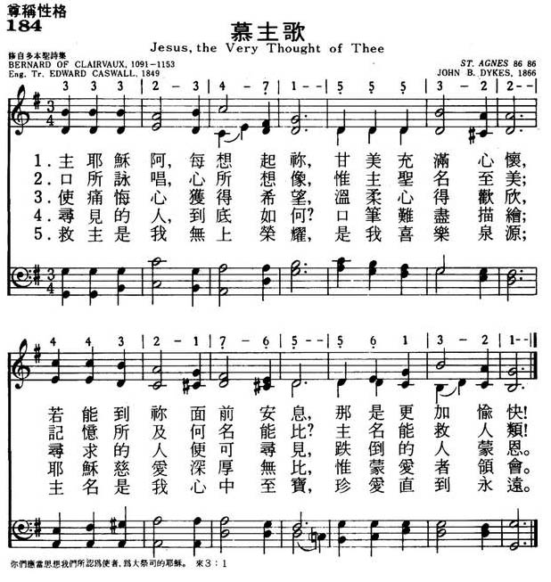
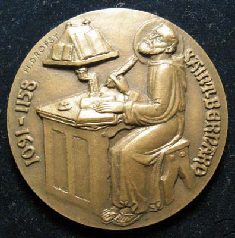
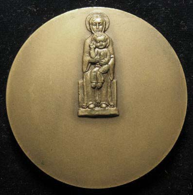

| 簡介
Fairest Lord Jesus |
Franz Liszt used this melody for a
“Crusaders’ March” in an oratorio, but this hymn had nothing to do with
the Crusades. No record of the German text exists before the middle of
the 17th century or of the Silesian folk melody before the first half of
the 19th century This hymn expounds on the theme of
the beauty of Christ and the Creation in an overflowing expression of
praise, similar to King David's statement: “One thing have I asked of
the Lord, that will I seek after: that I may dwell in the house of the
Lord all the days of my life, to gaze upon the beauty of the Lord …”
(Psalm 27:4 ESV).
This tune has the flexibility to be sung with a gentle mood or a
powerful one, depending on the accompanying instruments and their
volume. It is a flowing tune, and congregations may lose their rhythmic
unison between the third and fourth lines unless the leader indicates
clearly where to take a breath. |
|
|
|
1 Jesus, the very thought of thee
with sweetness fills the breast;
but sweeter far thy face to see,
and in thy presence rest.
2 O hope of every contrite heart,
O joy of all the meek,
to those who fall, how kind thou art!
How good to those who seek!
3 But what to those who find? Ah, this
nor tongue nor pen can show;
the love of Jesus, what it is,
none but his loved ones know.
4 Jesus, our only joy be thou,
as thou our prize wilt be;
Jesus, be thou our glory now,
and through eternity.
United Methodist Hymnal, 1989
|
耶穌我主，每想起你，心中充滿甘甜；
若見你面，安息你懷，更加甜蜜難言。非口能唱，非心能想，難尋記憶印象。
救主聖名最甜最美，別無他名可比。
痛悔的心獲得盼望。溫柔的心歡暢；
跌倒的人必蒙垂憐，尋求必得尋見。
尋見的人得著甚麼？筆墨難以描繪。
耶穌的愛究竟如何？惟蒙愛者領會。
只有耶穌是我喜樂，是我將來冠冕；
懇求耶穌成我榮耀，直到永永遠遠。
|
|
https://www.mred365.cn/dsm/szxg/pic/184.jpg
 
|
|
|
Jesus! the very thought of thee
http://www.xueshengshi.com/?p=7707
简介（一） （来源：《赞美诗新编史话》）
经文：“你比世人更美，在你嘴里满有恩惠 ……” (诗45：2)
《慕主歌》是从12世纪的一首拉丁文长诗中选译出来的。原诗长四十二节，只有六节于1849年译成英文。
很长时间对于这首诗的作者不敢肯定，后来发现了伯尔纳的手稿，才明确是明谷的伯尔纳 (事略参阅第97首)作的。


Bernard of Clairvaux Translator: Edward
Caswall
它表达了他热爱救主，歌颂救恩的至诚，被称为“拉丁圣诗中最有福音美致的圣诗”。它帮助我们回想起伯尔纳的另一段名言：
“如果你写什么，我念不出耶稣在里面，那对我是毫无滋味；你的讲道假若没有耶稣的回声，我也不敢赞同。耶稣在唇间是甘蜜，在耳中是音乐，在心头是快乐，而且还是我们的良药。你们中间，有人愁苦烦恼吗?请让耶稣进入你的心里，在你高举耶稣至圣至尊名的时候，不但会愁云消散，而且晴朗快乐就重新出现在你的眼前。”
曲谱调名《ST．AGNES》，也是英国牧师兼作曲家戴克斯 (事略参阅第 1首)特为这首诗所谱的， 1866年第一次出版。

http://pt.fuyinchina.com/m/view.php?aid=4124
伯尔纳（明谷，St.Bernard of Clairvaux，1091-1153）作词；
E.卡斯沃尔（1814-1878）改编； J.戴克斯（ B .Dykes，1823，3，10-1876，1，22）作曲（1866年）；
刘廷芳译（1934年）
耶稣我每想祢恩典， 心中真觉甘甜； 但愿能见祢的圣颜，安然居住主前。 有声难唱, 有心难念， 记忆之中难觅； 救主圣名至美至甜，别无他名可比。
痛悔之心得着希望，柔和之心得恩； 倾跌之人如何蒙爱！ 寻者如何相逢！ 寻着之人到底如何， 笔墨何能描写！ 耶稣之爱究竟如何， 惟有爱心了解。
5L耶稣是我唯一快乐，是我将来赏赐， 愿常在主荣耀里，直到无穷尽时。
本诗源于12世纪的一首拉丁文长诗，原作共42节，每节四行，是明谷的伯尔纳所作，表达了热爱救主，羡慕主恩的纯洁情怀，被誉为“拉丁圣诗中最具福音魅力的一首”。
伯尔纳曾经说过：“如果写什么东西，我读不出有耶稣在里面，我就毫无滋味；你的讲道如果没有耶稣的回声，我就不敢赞同；耶稣在唇间是甘蜜，在耳中是音乐，在心头是快乐，而且还是我们的良药。你们中间有人愁苦烦恼吗？那就让耶稣进入你的心中。当你高举耶稣至圣的尊名时，不但会愁云消散，而且眼前会出现晴朗的快乐。”
伯尔纳是中世纪欧洲著名的修道院改革家和神学大师。自幼献身归主，21岁带领一班同道，在法国北部的深山幽谷，自力更生，兴建起一座宏伟的修道院，使原来的“痛苦谷”变成“光明谷”，而伯尔纳也因此被称为“明谷圣人”。在他的领导下，这种新型的修道院遍及欧洲各地。他们竭力反对当时修道士那种养尊处优，饱食终日，无所事事的“隐居生活”，以他们的敬虔与服务，灵修与工作兼顾的生活，推动了教会的改革，起到了移风易俗的作用。他不慕功名利禄，终生任修道院院长，以他的朴素，道德和人格，赢得人们的尊重。1174年，教会追认他为圣徒，但他的传记作者说：“他所留下的优美诗篇，被广为传唱，比册封为圣徒更加光荣。”
音乐家格鲁克（Gluck）为《慕主歌》谱写了一首大型的合唱曲，旋律优美而感人，是圣诗班的首选诗歌之一。这里所采用的是J.戴克斯所谱的曲。
《赞美诗》505版82首《圣首受创》和103首《我心之乐》也是伯纳德作词的。
曲作者戴克斯幼年时即在他祖父任牧师的教堂里参加唱诗班。他很有音乐天才，一首乐曲听完后就能弹奏。他在少年时就已任主教座堂琴师；入剑桥大学读书时，即以业余音乐家闻名。他曾组织剑桥音乐会，以吸引音乐家为圣乐贡献力量。
戴克斯大学毕业（1847年）后任英国圣公会牧师，兼任唱诗班指挥，后从英国达累姆大学获音乐博士学位。他听说编辑《古今圣诗》的消息后，即投搞七首，全被采用。《古今圣诗》1875年再版时，他的曲谱被选用的多达六十首。他的圣诗乐谱被各教派人士争相采用，有的成为非常流行的曲调。由于他对教会工作的杰出贡献，死后他被埋葬于圣奥斯瓦尔德教堂院中。
https://www.umcdiscipleship.org/resources/history-of-hymns-jesus-the-very-thought-of-thee
"Jesus, the Very Thought of Thee"
Attributed to Bernard of Clairvaux, trans. by Edward Caswall
The United Methodist Hymnal, No. 175
Bernard of Clairvaux
“Jesus, the very thought of thee
with sweetness fills the breast;
but sweeter far thy face to see,
and in thy presence rest.”
Bernard of Clairvaux was one of the most interesting and influential people of
his time. Born in what is now considered France at Fontaines near Dijon in 1090
or 1091, his father, Tecelin or Tesselin, was a knight who died in the First
Crusade, as well as a friend and vassal of the Duke of Burgundy.
Bernard was educated at Châtillon by the canons of St. Vorles. After his
education, he entered the monastery of Citeaux, the first Cistercian foundation,
in 1113. Two years later Bernard was sent to found another monastery at
Clairvaux in the Wormwood Valley of France. At that monastery, he was originally
the abbot over 12 monks.
In 1130, the College of Cardinals was divided on the election of a pope. Some
cardinals chose Innocent II; others chose Anacletus II. Because of this
division, Bernard’s judgment was sought.
He chose Innocent II, and King Henry I of England and German Emperor Lothar
supported his decision. It was not until the death of Anacletus in 1138 and the
resignation of his successor that Innocent II was acknowledged as Pope.
Bernard also had great influence in filling other positions in the church. One
of his monks at the abbey in Clairvaux later became Pope Eugene III.
Bernard was a true mystic; his love of Jesus and the devotion to Jesus’ Passion
were based on a direct experience of Christ’s love. His convictions led to a
conflict with his contemporary Peter Abelard. While Bernard was a mystic, Peter
Abelard was a rationalist.
Bernard was the prosecutor at the council held at Sens, where Abelard was
condemned. He appealed to Rome, but died in 1142 before Rome replied.
In 1146, Bernard traveled throughout France and Germany to gather support for
the second crusade. In both countries he drew massive support, including that of
King Louis VII of France and King Conrad III of Germany.
The crusade of 1147 was a complete failure, however, as only one-tenth of the
people reached the Holy Land. Most of them died in Asia Minor, and those that
eventually arrived in Palestine found their efforts sabotaged by local lords who
feared that they might take over.
Sole blame for the failure of the second crusade was placed upon Bernard, who
wrote an apology for his actions.
“Jesus, the very thought of thee,” comes from a Latin text “Dulcis Jesus memoria.”
Generally ascribed to Bernard, the earliest manuscript containing the poem dates
from the turn of the 12th century, when Bernard was a child. The earliest
manuscripts are from England. Joseph Connelly and Matthew Britt also believe
that the poem originated in England and later moved to France and finally to
Italy and Germany. Originally the poem was 42 stanzas long; during the 15th
century it was extended to 51 stanzas.
Most of the early manuscripts do not indicate a use for the poem, but a
13th-century Augustinian missal places it among prayers for the preparations of
communion. Other manuscripts use the poem as devotion on the name of Jesus.
Eventually it was associated with the Feast of the Name of Jesus, first observed
around 1500.
There are many variations of this text appearing in manuscripts, and many show
the first two words reversed (“Jesu dulcis”). The English translation of
this poem by Edward Caswall is called “Jesu dulcis memoria.” It first appeared
in Lyra Catholica in 1849, and the stanzas have been slightly altered.
After the second crusade, Bernard returned to Clairvaux, where he died in 1153.
He was the author of many spiritual writings; over 500 of his letters and
sermons have been preserved to this day. These writings offer great
understanding of the period’s history as well as insight into his character.
Bernard was canonized as a saint in 1174 and declared a Doctor of the Church in
1830.
Mr. St. Romain is a student of Dr. Michael Hawn and a candidate for the master
of sacred music degree at Perkins School of Theology.
https://sites.google.com/site/madelinemonicasaints/home/b_saints/bernard
慶日：8月20日
甘飴聖師 & 熙篤會明谷 (Clairvaux) 修院院長
伯爾納鐸是中世紀修會傳統與文化的最好代表。他傳教熱誠，凡有需要保護信仰之處，他立即衛護，能說善道，擅長引用聖經，而且生活與所言相輔相成，他的自我犧牲與傳教精神使他成為基督徒理想的典範。「他是最後一個教父，足與其中最偉大者並駕其驅。」他的神學與靈修都是以基督為中心，特別是釘在十字架上的基督，深刻地影響了方濟學派。他是苦修家也是神秘學家，他的靈修生活充滿情感，默觀生活是他傳教生活的原動力。
他說人與天主之間的愛是分成四個階段來進展的：首先是人為了愛自己而愛自己，然後人開始為了愛自己而愛天主，再來發展到人為了愛天主而愛天主，最後是人能夠為了愛天主而愛自己。他又說真理是藉著謙遜達成的，共分三級：一、認清自己的卑鄙；二、同情旁人的卑鄙；三、潔清心靈，瞻仰天主。他認為愛天主並與天主結合是靈修的基礎，而這需要自由意志與聖寵合作，且不進則退。
聖人於公元 1090 年誕生於第戎 (Dijon)
的貴族家庭，兄弟姊妹七人。他年輕的時候在 St. Vorley 接受良好的教育。他的母親於 1107 年去世，對他影響甚鉅。1112
年，他加入熙篤會，他的父親與他的五位兄弟亦受到他的影響而一同入會。他選擇熙篤會的理由，就是因為它特別注意貧窮，嚴格遵守本篤會規。對於修會生活他非常熱烈而認真，所以才過了三年，他就因為過分苦修而致身體孱弱，但長上們竟毫不遲疑地委任他率領十二名會士到明谷
(Clairvaux) 去建立新會院，他畢生掌理該院，至死為止。
伯爾納鐸一心所注意的，是作一位普通修士和努力聖化自己；他最怕出離修院，因擔心不能全心專務神修和祈禱，然而他的影響力卻越過了熙篤會以外很遠。三十年之久，這位隱修士，因他特殊偉大的人格，實際上成了奉教各國的領袖。他雖盡力隱晦，人們卻在一切重大事件上去向他請教；教會和國家的高級人物，對這位簡樸修士的精神權威也低頭致敬，因為他是一位聖人，他的整個人生都放射著聖德的光輝。
公元 1130
年發生了一件嚴重的事端，幾使教會陷於分裂：就是樞機主教團分成了兩派，相繼選出了兩位教宗，即依諾森二世 (Innocent II)
和亞納克二世 (Anaclet
II)，兩次選舉都不完全合法。於是主教、君王和教友都陷於混亂，莫知所從，乃召集會議以謀解決。聖人被召前往參加，儼然天主所派的一位代表，他看出來依諾森最沒有野心，又是最先選出的，所以伯爾納鐸便對他表示擁護，大會也贊成他的意見，然而亞納克與其同黨卻不肯讓步。伯爾納鐸為勸人擁戴依諾森二世，避免分裂，在歐洲奔走了八年；他先使法國人表示擁護，又與英王、德皇及義大利各城往返磋商，直至教會回復了和平，伯爾納鐸才返回明谷修院。
公元 1144 年，法王路易七世想去救援十字軍第一次出征後所建立的東方拉丁國，教宗委任伯爾納鐸去宣傳十字軍。他走遍了法、德兩國的各城各省，熱烈勸講，鼓起了人民的興奮。次年組織了兩支軍隊，由法王和德皇分別率領起程；但二人彼此嫉妒，未能配合作戰，結果完全失敗。此時伯爾納鐸又去法國南部，勸化那一帶的異端人歸正。1153
年春他顯然筋疲力竭，但仍力疾走上征途去給人調停紛爭；不料回至明谷修院即與世長辭。時在公元 1153 年 8 月 20
日，享年六十有三，堪稱「教會的棟樑」。
伯爾納鐸對職責雖不稍寬假，但從未表示過鐵面無私的嚴厲；他有詩人的心靈，他那豐富的感情，在他一切著作中，處處表現無比的溫柔可愛，對基督的人性顯示著細膩的熱情。降生的天主，為他不但是當效法的模範，當追隨的導師，而且是靈魂的朋友和淨配。他描寫了純潔的靈魂同天主契合無間的神秘情形。他對救主之母的熱情也是同樣的細膩：他以滔滔不絕的美妙言詞，讚美稱頌她為罪人之托、仁慈之母、基督和教會之間的中保。
在伯爾納鐸身上，身體的病弱和靈魂的活力，最繁忙的教會工作和最高度的神修生活，竟能微妙地融合無間。他真是中古世紀的一顆明星。
|
https://blog.xuite.net/w3817939/hymn/64573964
1090年，伯納出生於一個法國楓丹（Fontaines Les
Dijon）的一位低階貴族家中，從小他的兄弟都勤於練武，唯獨他受到敬虔的母親影響，熱衷讀書，年幼時展現了無人能及的天賦。
17歲時，死亡走進了伯納家中；死亡不僅帶走了啟發他為主奉獻的母親，也帶走了他年少的縱欲和宴樂。母親死時安詳莊嚴，帶給伯納不少衝擊，他領悟：「從此我的一生中，我每遇見一件事情，我總要拿『永遠』來衡量它，看它是否為『永遠』效力。」
母親的死觸發他決志將自己奉獻給主，而「奉獻」在當時只有兩種選擇，一個是從軍，加入第一次十字軍東征（註4）的行列；另一個是走進修道院（註5），過隱居孤單的生活。年輕氣盛的他選擇了十字軍。然而，在東征的路上，主親自對他說話，祂用神國的榮耀吸引他脫離屬世的名譽；在禱告中，他決定永遠脫掉軍裝，一生只作神的僕人。
2年後的1112年，伯納說服了30位法國青年（包括他的父親與3位親兄弟）放棄前程，一行人奔入了黑森林，一起走上了這條永遠的道路。這30位弟兄後來成了十二世紀的靈修改革運動的基礎。
值得注意的，伯納並未照家人期盼的，選擇了當時流行的「經院哲學派」－富有、美麗、紀律鬆弛、位居城市附近的修道院，而前往了「奧祕派」－貧窮、嚴謹、坐落在黑森林深處的西篤（Citeaux）修道院。他說：「我選西篤，因我深信我軟弱的性格需要強的醫藥」（註6），雖然他在重視邏輯分析的經院哲學方面能力優異，但他知道他必須走裡面生命的道路。
1115年，伯納離開西篤修道院，前往更遠的苦艾谷（Vally of
Wormwood）修道院。他們一行12人抵達時，正好目睹6月燦爛的陽光普照在整個山谷，伯納德就將「苦艾谷」改名叫「光明谷」(Valley of Light )。
這一段時間，是伯納的職事邁向成熟的重要階段。
12位弟兄們用了不到6週的時間，一磚一瓦地蓋好了簡陋的教堂和木屋，竭力實行一種苦、低、貧的生活；有人形容他們「不但在衣食上，表現貧窮，而且房屋建築，聖堂的佈置，甚至在聖教禮儀上，處處崇尚貧窮」（註7），過一種自給自足，完全憑信心的生活，他常常教導弟兄們：「有了信心，你們一生就可以享用不盡天上父親的豐富。」
誰也沒想到，16年後，荒山中簡陋的光明谷修道院信心生活的見證，竟成為德法國王、教皇和主教們千里迢迢慕名而來，尋求屬靈與政治諮詢的地方。
這段時間的伯納展現了他人格中最為人所稱頌的「統合藝術」：一面追求修道院孤單、苦行、內裡生命經歷的成熟；一面運用神的恩賜積極想改變社會、改變世界。他相信積極參與教會與社會的事務，能帶領更多的人歸向神。因此，伯納是個「非典型」的修道士，他在隱修／入世、靜默禱告／佈道演說、離世獨居／參與公務中取得平衡，並且悠遊其中，這也反映出中古時期修道院另一種積極入世的精神。
伯納常常離開修道院，到各地出席教會重大會議，並應王侯或教皇請託解決問題，甚至西元1130年的教皇人選紛爭，最後也是經過他的意見而斷案。在官方天主教教會腐化的時候，修道院反而扮演了更有公信力的角色，使人信服。
在捍衛真理上，伯納是令異端喪膽的獅子。但他的著作如今仍為人所閱讀、享受的，並不是他嚴厲、咄咄逼人，解經式的真理辯證，而是他經歷式的著作，描寫主愛的兩本經典書報：《論神的愛》（Treatise
on the Love of God ）與《歌中之歌的信息》（On the Song of Songs ）。
他話語、口才的恩賜讓當時的人們又愛又怕，有人描寫當他到各處城鎮傳講演說時，「做母親的把兒子藏起來、做妻子的把丈夫藏起來、朋友把朋友藏起來」，免得他們的心被主奪走，受感化去做修道士，所以「年老的母親和年輕的姑娘，都很怕伯納多」。然而，讓他的話語具有征服的感力、使聽者無法不奉獻自己起來跟隨耶穌的原因，是因為他將主可愛的自己啟示在人的心中。
他寶愛耶穌到一個地步，他說：
如果有人寫了什麼東西，我若念不出有耶穌在裡面，那對於我就是毫無味道的。如果有人講道，若沒有耶穌的回音在裡面，我也不敢阿們。耶穌在我的唇中是甜蜜的，在我的耳中是音樂，在我的心頭是令人愉快的。你們有人愁煩嗎？若讓耶穌進入你心，你就不能不宣揚耶穌了。在你高舉耶穌之名時，不但愁雲消散，晴朗快樂也就降臨了。
說到愛神，他也說：「最淺的愛神，是因為怕神，或是要從神得到好處；到有一天，眼睛被開啟，看見了神的偉大、完全而愛神；最後，還要進入一種更高的愛，就是單純因為神的緣故而愛祂！」
1144年，第一次十字軍東征中基督徒所收復的城市一一失守，被土耳其、波斯的軍隊逐步佔領，甚至耶路撒冷也在威脅中，岌岌可危。法國路易7世在惶恐中請求伯納推動第二次十字軍東征，卻遭他拒絕；國王只好請教皇直接命令伯納，才讓他勉強答應。在伯納三寸不爛之舌的鼓舞下，凡聽到他講道的村莊，所有的男人都放下職業，發誓要收回神的地土，直奔巴勒斯坦，守護聖殿、聖城。
今日回頭看歷史上的兩次十字軍東征時，多半用批判、負面的角度，視之為政教墮落、腐敗、以及對權力慾望的表現，但在當時在一些愛主之人眼中，卻覺得收復物質的耶路撒冷是一種純潔、愛神的表現。
雖然伯納的初衷是宣揚對以教導代替殺戮來對待回教民族，但事實上十字軍行徑的醜惡，令他心寒失望。第二次的十字軍東征是場十足的慘劇：領袖間彼此不信任無法合作、與十字軍對沿途城市殘酷的屠殺和罪惡，使得大多的士兵在路途上死於疾病與飢餓，而活著抵達的人幾乎全被俘虜殺害。伯納推動的結果是令人心碎的，這對歐洲也是個劇烈慘痛的影響。
1149年春，十字軍第二次東征徹底失敗了。進入暮年的伯納，也因為大力支持這場東征而受到廣泛的指責，他生命最後的幾年就在這種失敗籠罩的陰影中落寞的度過。
年老的伯納心灰意冷，不願再周旋外在的政局、事務，就好像創世記中斷定愛子約瑟喪命，「心裡麻木，靈中甦醒」的老雅各（45章）。伯納回到深處，重溫主的甘甜，從主領受安慰，寫下了他晚年的名詩「耶穌的聖名」（Jesu
dulcis memoria），也成為教會歷久彌新的屬靈資產。
臨終之前，62歲的伯納招聚弟兄姐妹到他身旁，勸勉他們：「我沒有留下什麼好榜樣給你們，但有3點，卻是我盼望你們可以好好效法我的。這3點是我一生牢記在心，盡力遵守的。第一，我總是寧可多信任別人的意見，而少信任自己的意見。第二，當人家傷害了我的時候，我絕不找機會報復他。第三，我盡力避免為難別人。」在這個感人的時刻，伯納捨棄了年輕時高超的言語，他彷彿回轉像嬰孩，用最直白、簡單的話語，說出他謙卑在主前的態度。
900年很快過去了，如今，中古黑暗時代、十字軍東征、修道院已離我們十分遙遠了，但伯納的詩歌和屬靈著作經過了時間的淬鍊，對我們依舊親切、真實，因為在他的經歷結晶中，我們和他同樣享受了這永遠無法過去的寶貝－主自己的名，與祂完全的愛。
註解
1. 奧祕派與經院哲學
奧祕派注重直接與主交通、注視主，經院哲學則注重間接的推測與沉思；前者注重裡頭的主，後者注重邏輯分析和定義；前者比較和修道院有關聯，後者則和學院有關聯。就當時而言，經院哲學的發展，比奧秘派更興旺。伯納選擇了奧祕派的道路，因為他說：「主的道路是讓我們敬拜和默想的，而不是叫我們分析和發明的。」
在各個時代裡，總有一些敬虔愛主的聖徒，願意與神有親密的交通，享受與神同在的經歷，他們被稱為奧秘派。奧秘派不是搞些神秘兮兮的經歷，不是越神秘就越奧秘。奧秘派的重點是基督籍著聖靈內住在基督徒心裡，基督徒要籍著內住的聖靈與基督聯合，與主有親密的交通，天天背起自己的十字架跟隨主，讓基督漸漸成形在心裡。
2. 基督教與天主教
羅馬大公教會（Roman Catholic
Church）於明朝末年來到中國，他們翻譯聖經時，將「神」這個字翻成「天主」，所以中國人就將其稱為「天主教」，但在西方世界，在路德馬丁改教之前，羅馬大公教會就是從第六世紀之後的「基督教』」。那些從羅馬大公教會出來的改教團體，西方稱為「抗議宗」（Protestant）或「更正教」，也就是今日我們所說的「基督教」。
在6世紀後來的幾個世紀之內，羅馬天主教是完全墮落了，制訂出一些迷信與違背聖經教導的教義來，帶領信徒偏離聖經真理，陷入異教的實行。例如，當人要禱告時，羅馬教的教導是必須到馬利亞或聖人的雕像前燒香、祈求；當人犯了罪，就必須到神父前告解，還要受肉體的懲罰或鞭打；若人想要追求聖潔，就需要禁食，還要到羅馬朝聖，參拜一些羅馬教搞出的神聖遺物、古蹟等。
3. . 中古黑暗時代
西元476年，西羅馬帝國無力抵禦強敵，滅於蠻族的手中，加上590年所建立起的羅馬天主教，使得西歐進入一個所謂的黑暗時代。大部份的羅馬文明在這段期間受到破壞，並且被蠻族文化所取代，戰亂頻繁、經濟衰敗、政局混亂、古希臘與羅馬的輝煌建築遭毀、圖書館被焚毀，造成空前文明的大倒退。這個名稱的使用，一方面也是因為從這個時代僅有少數的歷史文獻流傳下來，讓人們僅能藉由微光一窺當時發生的種種事件。
4. 十字軍東征
中世紀的歐洲人，為什麽那樣地熱衷十字軍的運動呢？第一，當時的基督徒，逐漸養成一種錯誤的觀念，以為一生中能到聖地去一次，並收集到一些聖物，那便有很大的贖罪功用。而回教勢力已經占領了巴勒斯坦，他們就覺得應當奪回聖城，便利聖徒去朝聖。因此，十字軍運動在他們的觀念中，乃是一場“聖戰”。其次是教皇本身的野心，想藉著這個運動以奪取他對君士坦丁的控制權，並統一東正教。第三，要以軍事行動扼阻回教勢力的西侵。
5. 修道院
修道院中所實行的禁欲主義並不符合聖經。禁慾主義起源於異教。在人的觀念裡，過敬虔的生活，不受慾望的綑綁，就是完美的生活。但事實是，我們一旦被基督充滿，就完全沒有禁慾的需要。我們與基督同死，已經從世上的蒙學，包括禁慾主義中得釋放（歌羅西書2.20-23），實行禁慾主義的人誤解了保羅所說的「痛擊己身」（哥林多前書9:27）可參考倪柝聲弟兄「初信造就」下冊第38章「禁慾主義」。
標榜禁慾主義的修道院後來也漸漸腐化，當他們越來越富有的時候，卻變得極度不道德。
然而，修道院在文化上的地位卻是相當重要。修道院在中古世紀這崩壞的文明中負擔起保存史料、文學、拉丁文，與感化蠻族的責任，對於閱讀、寫作、藝術，和文化都有極大的貢獻。甚至有人說是修道院拯救了西方文明。
伯納就是修道院的其中一位發揚光大者。在中古黑暗人心虛空的時代，修道院的禁欲生活形態竟在當時的歐洲掀起一股浪潮。當1153年伯納德逝世時，根據記錄顯示，光明谷修院的「子院」已經發展到至少有160座，而經過改革的西篤會也有350座之多。
6. 西篤修道院的生活
伯納確實為他的選擇付上了代價。在西篤修道院的苦行，嚴重破壞了他的健康，西篤修道院裡禁食、刻意睡眠不足的生活，導致他一生受到貧血症、偏頭痛、腸胃炎、高血壓等病痛的折磨。
7. 一位光明谷弟兄的見證
與伯納一同住在光明谷的弟兄曾這樣見證：「我和伯納弟兄，在谷中同住了幾日，無論我怎麽樣地觀察他們，我總是很驚訝，我想我是看見了一片新天新地了吧？當你一走下山谷的時候，你就能夠感覺到神在那裡，而靜謐的山谷，在修道院簡樸風格的陪襯下，似乎在對你輕語：在這裡有屬主窮人那種真正的卑微。午正的安寧，可比子夜，其中只有他們讚美神的歌聲，和田園中間的鋤犁聲，偶爾會劃破谷中的安寧。在這裡，沒有一根骨頭是懶的，除了睡覺和靈修的時間以外，每一個弟兄都是拿著鋤、犁、鐮、斧，忙碌地做他們的農事。然而，神的同在彌漫了整個山谷。」
https://hymnary.org/text/jesus_the_very_thought_of_thee
Notes
Scripture References:
all st. = Eph. 3:19
The extended (forty-two
stanzas) Latin poem 'Jesu, dulcis memo¬ria" is the source of this text (see
discussion at PHH
307, which includes its traditional attribution to Bernard of Clairveaux).
Although some scholars believe the poem was written by Bernard, others
suggest that it originated in Britain at the end of the twelfth century.
Most agree, however, that the poem's fervor was influenced by the famous
Bernard. The English text is taken from a fifty-stanza translation by Edward
Caswall (PHH
438) published in his Lyra Catholica (1849), where the
opening line read “Jesu, the very thought of Thee.”
Displaying a passionate
devotion to Christ, the text provides a clear hint of its original use as a
text for personal devotion. Its focus is entirely on Christ and his saving
love, a love that gives hope, joy, and rest to believers (st. 1,3), a love
that excels any human love (st. 2, 4).
Liturgical Use:
Worship that focuses on Christ's redemptive work; Lord's Supper; Lent.
“Jesus the very thought of thee” was originally penned by Bernard of
Clairvaux in the 1100s. The son of a knight, Bernard grew up with wealth,
power, and opportunities. Instead of pursuing these things in his adult
life, however, Clairvaux abandoned his earthly luxuries and became a monk.
In this hymn we can see how devout and sincere Clairvaux was. The text
expresses the feeling of joy and bliss that only Christ can provide.
Text:
The text of this hymn was penned by Bernard of Clairvaux, a saint, abbot,
and doctor born in 1091. The lyrics were originally Latin (original title:
“Jesu dulcis memoria), but were later translated by Edward Caswall in the
mid 1800s. Although we usually see five four-line stanzas in hymnals today,
the original Latin hymn had fifty. Caswall selected five stanzas (1-4 and
40) to be used as a vesper hymn for the Feast of the Most Holy Name of Jesus
during the second Sunday after epiphany. The hymn has lasted for centuries
and been published in over eight hundred hymnals, enjoying a timelessness
not shared by many other hymns.
Tune:
The tune most widely used with this hymn is ST. AGNES, written by John B.
Dykes in 1866. It was originally written for Edward Caswall’s translation of
“Jesus, the very thought of thee,” but has been used with many other hymns
since then. The tune is named after a young Christian woman who was martyred
in A.D. 304 for refusing to marry a nobleman. She said, "I am already
engaged to Christ, to Him alone I keep my troth." The tune is simple and
sweet, being a perfect match for the text.
When/Why/How:
This hymn would work in many normal services, but would perhaps works best
in redemption, communion, or Lent themed services. It is best sung in two
long lines and in harmony.
Notes
John B. Dykes (PHH
147) composed ST. AGNES for [Jesus the Very Thought of Thee]. Dykes
named the tune after a young Roman Christian woman who was martyred in
A.D. 304 during the reign of Diocletian. St. Agnes was sentenced to
death for refusing to marry a nobleman to whom she said, "I am already
engaged to Christ, to Him alone I keep my troth." The tune was published
in John Grey's Hymnal for Use in the English Church (1866).
ST. AGNES is a simple
tune, best sung in two long lines and in harmony. To encourage
meditation on the text (as was the practice with its Latin original),
consider having the congregation follow the text of stanza 2 ("No voice
can sing") without singing, but simply listening to it as played by the
organ.
--Psalter Hymnal
Handbook, 1987
http://ilovejesushk.blogspot.com/2014/01/blog-post_8.html
伯納德的靈修神學
劉錦昌
（輔仁大學神學院神學碩士，台南神學院哲學、系統神學講師）
前 言
西洋中世紀思想從十二世紀開始興盛，十三世紀步入高峰，在哲學史上形成「士林哲學」的黃金時代；在此一時期歐洲基督徒的靈修活動也同時達到一種高峰
狀態，從整體角度而言，可謂信仰與理性平衡並存。曾任英國坎特布里總主教的安瑟倫（St.Anselm,1033-1109）即是一種平衡的典範，後來的
大雅博（Albert the
Great,1206-1280）､多瑪斯師徒，以及文德聖師（Bonaventura,1221-1274）都屬於這種類型。不少學者在研究十二､三世
紀的基督信仰時，相當看重安瑟倫以降中世紀的哲學理性思想，卻忽略了安瑟倫本身所具有的靈性敬虔傾向，且在文德聖師的心靈哲學之外，多瑪斯的理性思考與神
秘屬靈經驗是同數並重的；同時忘記了也有人稱呼十二世紀上半是光明谷的伯納德（Bernard of Clairvaux, 1089-1153）之時代。1
伯納德在十二世紀的歐洲是一位頗具名聲､多種傳奇的人物，連他自己都稱自己為「怪物」（chimera）２，但是他的靈修生活與著作卻反應出一種生
命形態，他的作品擁有特殊風格，獻身的生涯又是如此投入，天主教會史上尊稱他為「流蜜聖師」（doctor mellifluus）；3
據說宗教改革的要角馬丁．路德（M. Luther），從伯納德的白白救恩說得到不少安慰，且稱伯納德是「世界上最聖潔的修道士」。4
本文主要根據法哲祁爾松（E.Gilson）選編《聖伯納德－歸向天主的旅程》一書，來探討伯氏之靈修神學兼及他的若干神學思想，藉此分享這位靈修大師的 靈性生命。
第一節 生平與爭議性事蹟
伯納德出生於法國地詠的楓丹（Fontaines Les
Dijon），父親戴瑟林（Tescelin）是一位武士，母親亞來德（Aleth）則是名頗有信德的女性；5
伯納德的母親在1104年9月去世，這事讓他非常心痛，母親是啟發他獻身､為教會而接受教育的人。1111年伯納德向家人表示要入修道院，家人對他的入院
並不意外，只是不明白他何以不選擇附近而相當富裕的本篤會（Order of St.Benedict），卻意願想當那剛成立不久的熙篤會（Cistercium）修士。6
往熙篤之前，他共找了三十名親人一同起程前往熙篤。這一批往後熙篤的白衣會士，成為來日十二世紀的靈修改革運動的基礎。
雖然伯納德在世時，便享有許多的聲譽，不過歷史學家卻對於他也有不同的評論，中國的學者趙敦華認為伯氏嚴厲鎮壓異教､異端的政策，組織第二次十字軍
東征､倡導成立異端裁判所，可以說是中世紀專制主義的象徵；7 也有學者以比較溫和的語氣來說上述這些事情，伯納德是受到教宗的委託，而自己忍受屈辱；8
任達義則指出關於伯納德與阿貝拉（P.Abelard, 1097-1142）之間的神學爭論，部分有情緒的成分，但是也有「很不願而滿懷憂傷」的因素；9
依照甘蘭（Cayre）的想法，當教宗依諾增二世（InnocentⅡ）時，產生兩位教宗的教廷分裂狀態，伯納德居中周旋八年的經驗，應該是造成他後來對
分裂異端相當嚴厲的原因。10
西元1115年伯納德受斯提凡．哈丁（S.Harding）院長之命，出任克勒窩（Clairvaux意即「光明谷」）修院第一任的院長之職，而
「這座新成立的修院，一開始就以體驗曠野會祖的精神為己任，操練著非凡的神修。伯納德更是身體力行，作眾修士的表率」11，他的一生整個的生活，可以說都
是本著熙篤的精神､聖本篤（St.Benedict,480-547）《隱修會規》的藍圖在進行。
第二節 熙篤會與光明谷修院的靈修特色
歐邁安（J.Aumann, O.P.）在《天主教靈修學史》中對於熙篤會的靈修有下列的敘述：
-
保持最原始純樸與嚴謹的修道方法（包括恢復體力勞動）
-
長期靜默，避免積聚財富（實踐貧窮與苦修）
-
擺脫世俗與盡量按著字面意義來遵守本篤規則
-
完全委身於禮儀祈禱的生活
-
具有末世性質的生活方式，但對受造物保持深刻欣賞之心
12而熙篤的靈修特性，我們可以說幾乎都在伯納德與光明谷修院的生活中體現了出來，這是所謂「熙篤的赤貧」，他們「不但在衣食上，表現貧窮，而且房屋建
築，聖堂的佈置，甚至在聖教禮儀上，處處崇尚貧窮」。13
這樣的生活形態竟然在當時的歐洲掀起一股浪潮，此反應出人心之所向；1153年伯納德逝世時，根據記錄顯示，光明谷修院的「子院」已經發展到至少有一百六
十座的數字，而經過改革的熙篤會也有三百五十座之多。14
伯納德與熙篤會士不只是自顧個人靈修，他們積極參與教會與社會的公共事務，也唯有如此才能帶動整個世界歸向上主。過去我們對於基督教會的隱修士或者修道團
體總有一種誤解，以為他們是一群離世隱居而不食人間煙火的孤僻之人，對人間無所貢獻；現在我們從伯納德的生平和參與公務，可以明白隱修會士的積極一面。國
內的歷史學者羅漁教授曾在《中古之光－修道士對文化的貢獻》書中如此描述伯納德的社會角色：
偉大神秘學者，首推熙篤會院長聖伯納德，他真可稱為中世紀神秘學之父，其信心活潑而深刻，神學著作豐富而文辭優美，尤以對聖母的佈道詞，洋溢著赤子
孺慕之情，因而享有「暢流（流蜜）博士」（Doctor Mellifluus）的榮銜。為德國新教名批評家哈爾納克（A.von Harnack
1851-1930）譽為「十二世紀之宗教天才」。他支持教會革新運動，為著名的佈道家，第二次十字軍的興起是賴他三寸不爛之舌之功。所著拉丁詩歌，迄今
一些仍為天主教及新教教堂所詠唱。15
虔誠的隱修會士生活與支持教會革新運動並不矛盾，十二世紀伯納德的改革運動遍及神職與信徒兩界，也深及棘手的教會政治與行政問題，可說「整個教會的
利益，至死縈繞在他的心靈上」；16伯納德身上有一種能力，根據《聖伯納德－歸向天主的旅程》一書的作者所指出，伯納德有一項特質，「聖伯納德精神，最顯
著的特點，是能使本質上，不同的方法，以及除非在最高完成階段，不能相容的才能，取得完備的和諧」17，這是一種統合的藝術，將對立的事物予以圓融；當然
統合的前提是不能分裂，且不是異端觀點。為他人而言，或許這是一種幾近極端兩造的偏峰，但是在伯納德來說，隱修／入世､靜默祈禱／佈道演說､離世而居／參
與公務等只是一體的兩面，並不衝突，他自在於其中。二十世紀出名的隱修者牟敦（Thomas
Merton）則指出，熙篤會士很少純默觀者，反而他們的生活太積極，太多工作要做，熙篤會士的生活是一種「活動的默觀」。18
牟敦曾在他的自傳《七重山》裡頭，如此來描述他所了解的熙篤會：
熙篤會生活的邏輯和世俗生活的邏輯完全相反。世俗上，人人要出人頭地，最超卓的人就是那站在眾人之上，引得注意的人。而隱士從世俗中隱退，不是減損
自己，而是使個人更完滿､更真､更成全的自我，因為他的人格在精神上､內在的秩序上成全了。而與天主－一切成全的原則－契合。19
但是，熙篤會這種生活的邏輯與靈修不是逃避世俗生活，而是一種轉化､悔改､更謙卑的流露。甫於1996年逝世的本世紀靈修學作家亨利．盧雲
（H.Nouwen,1932-1996），在1974至78年間，曾在紐約熙篤會的修院居住一段時間，與隱修士們一同工作､生活，他也在1981與82
年期間，到過拉丁美洲和窮人一起學習生活，對此，盧雲的喜好者嘉為（J.Garvey）指出，「一個寫以東正教的聖像祈禱的盧雲，和一個寫中美洲需要正義
的盧雲並不互相矛盾」20；對盧雲來講，表面上似乎存在著兩種不同的靈修學：
個人主義化．化約式的靈修學：傳統的靈修學－過去盧雲所熟悉､介紹的靈修學
自己．連結貧苦大眾的靈修學：解放的靈修神學
真正的是，盧雲他從拉丁美洲的生活中體驗到，一旦將社會意識灌注入傳統靈修生活之中時，可以讓我們對傳統屬靈的美德如謙卑､順服等有更新的理解，且
以更謙卑與學習的心情來回應受苦基督的呼召。21
這種解放的靈修，與傳統或者比較偏個人式的靈修，看來似乎很不相同，其實兩者未必便是對立衝突的；而牟敦與盧雲的情況可以幫助我們，用更具彈性､兼容的觀
點來了解伯納德的靈修，這可說是一種「視域」（horizon）的融合，也讓我們發現伯納德靈修的特質。
熙篤會與伯納德的靈修，是和貧苦的大眾相連結的那種耶穌型的解放靈修，這使得熙篤靈修得以從自閉式個人主義化靈修的弊端中脫離，且也不淪為世俗化的宗教生活。
第三節 伯納德的靈修神學
甘蘭在論伯納德的靈修學時提到一點，因為靈修是人與上主結合的努力，所以他認為伯納德的靈修學有一支點，就是以恩寵與自由意志的神學理論來為其支
撐，而伯納德此一恩寵與自由意志的理論基礎是來自奧古斯丁(St. Augustine)。22
靈修神學與靈修學有所不同之處乃在於，靈修神學是以清楚的神學預設或基礎來討論基督徒靈修的種種，也從神學的角度來探討靈修課題；此外，我們需要記得伯納
德相當慣用靈意解經的方法，這也是形成其靈修神學特色之一。我們主要分三項來敘述伯納德的靈修神學：一、恩寵與自由意志；二、靈修的課題；三、密契思想
（mysticism）。
(一)恩寵與自由意志
我們知道馬丁．路德在救贖論與恩典論的思考上曾受到伯納德影響，而伯氏是在1127年寫《論恩寵與自由意志》此一小冊子。伯納德對這個問題的基本立場相當清楚，他說：
天主聖寵，在我身上所起的作用，我聲明，我發現天主聖寵，在行善中，又感覺是聖寵扶持我，最後有賴聖寵，促使我完成該項善功。23
伯納德他主張說自由意志的任務就是得救，為完成救贖的工程，需要恩寵與自由意志兩者缺一不可，上主是施行救贖者，自由意志是接受救贖者。因此，自由意志也可被視為恩寵的合作者；但是需認清連「我有心善行」，這已經是由於上主的恩賜，而不在於人的努力，伯納德告訴我們說：
好思想､好意願､好行為，都是上主在我們身上完成的：第一件，當然不需要我們，第二件是偕同我們，第三件是藉著我們。…我們得救的開端，無疑是來自
上主，絕不可是借助我們，也不可能是偕同我們。但同意與實行，雖不出自我們，卻又離不開我們。…我們自己絕不能發出良好的意願…切不可因為思想､同意與行
動，都是在無形中，在我們以內，經常發生的，就把它們歸於我們的意志，因為意志是軟弱的；更不可能認為是上主不得不這樣做的，…這只能歸於上主的聖寵，因
為上主充滿恩寵。上主的聖寵，在人的思想中撒下種子，啟發人的自由意志，改變人的感情，糾正感情的偏差，增加人的力量，引導他發出實際行動；在行動中維護
他，使他不致出差錯。聖寵與自由意志一起工作，最初是啟發人的思想，然後在同意與實行時陪伴他。聖寵啟發人的目的，正是讓他以後同自己合作。不過先由聖寵
單獨開始，而後是由聖寵與自由意志共同完成。二者是共同工作，不是各做各的，是雙方同時的工作，不是輪流工作，每一個程序都是共同操作。…雙方用單一的工
作，共同完成全部工程：自由意志做的是全部，聖寵做的也是全部，全部在自由意志內，同樣全部由聖寵完成。24
伯納德指出，意志的自由與下列三種自由需加以區別：
1.擺脫罪惡的自由 本性的自由→勝過獸類
Libertas a peccato
2.擺脫痛苦的自由 恩寵的自由→勝過肉身
Libertas a miseria
3.擺脫必然的自由 生命的自由→勝過死亡
Libertas a necessitate
意志的自由不論在惡人或善人身上，都是同樣的不多也不少沒有區別，人都有擺脫必然（強迫壓力）的自由；我們行善乏力是缺乏擺脫罪惡的自由，意志受到
了限制，但並非全然毀滅，人願意行善可見他的意志是好的，這一方面意志是自由的，而另一方面卻做不到自己所願意的事，被罪惡所俘虜，缺乏擺脫罪惡的自由；
但是，當人接受上主恩寵後，獲得擺脫痛苦的自由，也叫「稱心如意的自由」（Liberum complacitum），此乃少數人在默觀的神魂超拔中所能初嚐的滋味。25
這是伯納德為協調恩寵與自由意志同時都有作用，他所做的說明；而伯納德論恩寵與自由意志的學說上承奧古斯丁思想，下啟宗教改革時期的路德､加爾文
（J.Calvin, 1509-1564）「因信稱義」之神學（強調唯獨上主恩寵）。
(二)伯納德的靈修觀
在這一小段裡，我們討論伯納德所提醒的謙遜､愛德､祈禱等三項與靈修攸關的課題；而此三項課題的討論我們各根據聖師的三本著作來進行，即《論謙遜及驕傲的等級》、《論愛上主》與《論思考》。
1.謙遜
1124年左右，伯納德完成《論謙遜及驕傲的等級》此處女作；甘蘭認為聖師的靈修主張所看重的是「進步律」（La loi du progres）－更成全的上升，而在上升之方法中，伯納德最致意的乃謙遜。26
謙遜是尋找上主的基本態度，缺乏謙遜，來談尋找上主，往往只不過是一種騙人的假像，謙遜並不是不自然的、強制的矯揉造作，而是一條導向真理的道路。伯納德
認為，當耶穌說：「我是道路，真理，生命」之時，「道路」所指的就是謙遜，謙遜能引人歸向真理。27
有了謙遜的操練，才能提高到默觀真理的奧秘境界，一旦達到謙遜的高峰，便可與真理相會；謙遜首先是認清自己沒有自救的能力，沒有能力去救別人，28
這是聖師所深深體會的人性真理，其神學人學（theological
anthropology）恩寵的原則，因為謙遜使人真正認識自己､輕視自己，而真理就建立在謙遜的頂端－通過十二等級謙遜的道路來達到，完全的謙遜就是
認識真理，真理所賞賜的乃是謙遜的人，伯納德引用《彼得前書》五章5節：「上主…賜恩給謙卑的人」的話來贊助自己的說法；29
他指出登上謙遜的第十二級後便可達到真理的第一級，當人在自己身上發現了真理時，同時就在真理中找到自己，接著心境隨著上升，提高到真理的第二級－認識自
己的軟弱而同情他人，當自己的心靈打掃乾淨時，藉著默觀而登上真理第三級。30
至於驕傲也有十二級，表現的樣子即：好奇､思想輕浮､尋求歡樂､自我表現､行給人看､傲慢自大､搶奪功勞､辯護己惡､假裝認罪､公開反抗､肆無忌憚､習於 為惡。31
2.愛上主
祁爾松認為《論謙遜及驕傲的等級》所描述的是，人走向上主最初的若干階段，謙遜必然引領人認識自己，然後也必定引領人愛上主
，而《論愛上主》此一小冊子，所敘述的乃歸向上主的第二階段；32雖然這是一本小冊子，卻花了伯納德十多年的歲月（1126年∼1141年）才加以完成，
指名獻給教廷的國務卿愛邁理克（Aimerico）。在文中，伯納德將愛分為四種等級：
愛的第一級：為自己而愛自己－非個人主義
愛的第二級：為自己而愛上主－得到上主恩寵協助而愛上主
愛的第三級：為上主而愛上主－嚐到上主甘飴受到吸引 體驗上主慈愛
愛的第四級：只為上主而愛己－純潔的愛 主旨承行 非人自力可達
伯納德這篇論愛的文字中，流露出不少奧古斯丁追求對上主之愛的影子；在伯氏他的《雅歌》講道詞中，也曾將愛的深度､最高點表現無遺。甘蘭稱四種愛
為：私愛（L'Amour propre）､利愛（L'Amour Mercenaire）､子愛（L'Amour
filial）､純愛（榮光之愛），有助於我們對愛的四種層次之理解；而這一切都靠聖神恩寵來「聖化」此愛，使其歸向上主。33曾經有天主教學者指出，伯
納德在《論愛上主》中強調的是發自人本性之愛，而在《雅歌》講道集裡頭所主張的則是忘我之愛，可見他的學說並不一貫；對此問題祁爾松在《中世紀哲學精神》
一書裡頭附有一篇短文，討論熙篤會的密契論其一貫性問題，祈氏告訴我們早在1125年伯納德的神秘學著作《愛德書簡》當中，「本性之愛」與「忘我之愛」兩
種見解已經同時出現，而且在《論愛上主》中，也發展了忘我之愛的觀點。34 在此我們引用一段描繪伯納德個性的書寫，好讓我們對他的思想特質有更貼切的把 握：
在他的所有著作和論辨文章中無不顯示出一位非凡人物的獨有魅力：充滿對上帝之愛的激情，寬厚而又激進，脆弱而又堅強，積極主動而又善於沈思，先天的神秘主義傾向，無私因而往往不妥協，廣交朋友而又對敵人毫不留情。35
他具有一種先天罕見的辯證綜合的能力，在其他思想家來說或許是衝突的見解，對伯氏而言卻是顯露他的超越能力之所在，其實這也是他已經體會到最高層次
愛的滋味點滴之表達，因為「將有一日…肉體之愛將被吸收在靈性的愛內，現在屬於我們人性的一切眷戀，都將變成為神靈的（上主情感）」36。上主對人類的
愛，表現在耶穌基督所說浪子回頭慈父寬納的比喻中，也表現在「道成肉身，住在我們當中」的吊詭真理上，而這也是伯氏所領受的「上主之愛」－起於人類本性又
超越人類本性的忘我､純潔之愛－由耶穌基督在十字架上所完成的。
但愛上主並非一步登天的事，需要層層而上，非靠己力乃是謙遜與上主同行，伯氏在《論我們愛上主的三種方式》這篇講道中，分析申命記六章5節「你們要盡心､盡性､盡力，愛主你的上帝」的經文意義：
盡心的愛：與誠懇的感情相符合 由盡性的愛陪伴 藉這種愛使人對有肉身的基督發生愛的感情而祈禱默想 肉體之愛
盡性的愛：與理智的判斷(目的)相符合 由勇敢熱情之力陪伴 注重智慧､公義､真理､聖潔 理智之愛
盡力的愛：與堅強而有力的意志相符合 是理智之愛達到完全的地步(聖神力量的協助，充滿聖神) 屬靈之愛 37
可見需要上主恩寵､自由意志､靈修的配合，才能達到愛上主的境界。
3.祈禱
《論思考》是伯納德晚年的作品，寫於1149年至1153年之間，拉丁文De Consideratione一詞除了「思考」的意義外，尚有觀察､反省､慎思等意思，是寫給出身於光明谷修院的教宗歐日尼三世（Eugenius
Ⅲ,1145-1153在位），希望成為教宗的座右銘；可惜在作品完成當年，教宗歐日尼三世去世了，不久伯納德也離開人間。38
在《論思考》中伯納德提醒教宗「敬虔乃是留下時間來思考」，他引用《詩篇》六章10節的話說：「你們要休息，要知道我是上主」，接著指出這段經文與
敬虔有關，而更進一步說敬虔是「思考的主要目的」。39 史體爾（D.V. Steere）在《中世紀靈修文學選集》的導論中說，伯納德是本著一種直接面對上主的經驗與對世間人情事故練達的知識，湧出《論思考》的靈修神學意境，因
為他體驗過上主「祂總之比你更有愛，比你的愛更先。」這樣的生命事實；40他也希望教宗不斷反思自己是怎樣的人，「思考必須從你自己身上開始，並且要在你
自己身上結束。不論思想奔馳到什麼地方，一定要把它招回來，這樣才能獲得救恩。」41，思考可分：
一般的思想 利用感官､可感覺事物合理思考以獲得上主
推理的思想 專心研究各種事物以尋求上主
默觀的思想 收斂心神，在上主的幫助之下，脫離世俗默觀上主
而「一般的思想」與「推理的思想」都需與默觀的思想相聯繫，才能名符其實，伯納德認為默觀的思想才是真正的品嚐。42 至於默觀可分為四種：
第一種默觀 對上主的威嚴感到驚奇 具備煉淨的心從罪中解放
第二種默觀 凝目注視上主的審判 使人保持謙遜敬畏上主
第三種默觀 休息回憶上主的恩惠 使人不忘上主恩典
第四種默觀 專心期待上主的預許 忘記一切背後之事 43
伯納德提醒歐日尼三世，上述這一切都不是在論證中，乃是在祈禱裡頭易於找到上主。44
思考一方面是一種反省､慎思，但是另一方面也是一種愛的研究，甚至是一種高級的祈禱､默觀，當上主恩寵臨到之時，人們可以找到上主；思考為恩寵而準備，恩
寵才是更高貴､易於找到的。45 歐邁安指出，伯納德所謂的思考､默觀等靈修層次，無不出於上主的恩寵：
聖伯納德認為促使人成全的工具是天主的恩寵､基督的人性､瑪利亞的協同救贖和中保；默想，特別是默想基督的奧秘､祈禱､良心省察､約束思想與情感､靈修指導等。46
(三)密契思想
在基督宗教的思想史上，通常人們稱呼伯納德為中世紀的神秘主義（mysticism，或稱「密契主義」）之父；47
這不是說西方或中世紀的密契思想起源於他，由他所創立，而是肯定他在這方面的貢獻與影響。48 保羅．田立克（P. Tillich）指出，對伯納德而言密契主義可分兩類：
49
這兩種密契主義所顯示的其實只是一種愛的密契主義，是屬於基督徒的密契主義，而在伯納德身上表現為兩種層次，但基本上都是基督徒與基督生命密契之結
合；由於基督之愛的緣故，產生了「覺愛」（Amour
sensible）與「神愛」，前者以基督的人性為對象，後者以基督的神性為對象，兩種愛的流露並不彼此排斥，且覺愛可以是神愛的前導。神愛是充滿聖神的
特恩，由聖神所供給，只有認識聖神種種臨在的人可能如此來愛上主，由於聖神的光照引發了人的愛情，使得這現象「像是個上主之吻；從吻中來的學問，是在愛中
接受的；為了吻象徵愛。這個吻，這個經由聖神而來的上主之恩，就是默觀，就是狹義的神秘聖寵；它在靈魂上燒起神愛」50，於是產生了一個神聖､密契的婚
姻，在那基督將祂的吻給予愛祂的靈魂，這是幸福之吻。伯納德認為在如此一個神聖的吻報之下，我們與基督結合，通過祂的恩寵與祂同心合一。51
這樣的靈修境界，也出現在大德蘭（Teresa of Avila, 1515-1582）與十字架約翰（St.John of the Cross,
1542-1591）的靈修意境與比喻中，而與這兩位西班牙靈修大師同時代的宗教改革思想家加爾文，他的重要著作中也出現「密契結合」（mystical
union）的字眼與思想，此與伯納德的密契主義不無關係。52
祈爾松主張關於密契經驗與境界的描述，「聖伯納多自認是不能用言語形容的。…自己神魂超拔的實例，他把這樣的經驗描繪為突然的､無法預料的､稀少的
､且短暫的。…根據事後可以形容的程度，靈魂當然體驗到完全被聖言滲透的印象，整體溶化於聖言之內，…這時已無從分辨什麼是問題，什麼是答案。…只有上主
的愛，在和平中，統治一切，沒有什麼事，可以擾亂人心的安寧。」53，而這些對於聖師而言都是來自上主的白白恩寵，不但如此，甚至在人神魂超拔之時，發生
「上主化」（deifieatio）的超本性變化，這仍是出於上主的恩寵，不能以泛神論的方式來理解，以致於破壞了無限者與有限者之間的差異。54
結 論
有學者認為伯納德《雅歌》講道集（詮釋）是靈修神學的傑作，也是了解十二世紀隱修院神學的鎖鑰，55
本文雖未直接引用《註釋雅歌講道》的資料來敘述伯納德的靈修神學，但是從聖師其他主要著作的把握而言，其實與《註釋雅歌講道》的基本思想相去不遠。雅歌三
章1節經文說：「我夜間躺臥在床上，尋找我心所愛的」，伯氏提醒這是上主「預先」尋找人，基督主動首先尋找的恩寵，56
道成肉身的恩寵拯救神學是伯納德一貫的思想，在恩寵前，人只能謙遜領受上主的扶持。
註：
-
謝扶雅編，《中世紀靈修文學選集》，香港：基督教輔僑，1964，導論頁22；另 J.Motte, 《天主教史》 （卷二），台中：光啟，1983
（三版），頁111-112；王神蔭，《聖詩典考》，香港：基督教文藝，1985 （五版），頁131。
-
在希臘神話中是一種具有獅子頭､羊身､蛇尾，能吐火的怪獸。伯納德說自己既不像神職人士也不像平信徒，「我是我的世紀之怪獸」。
- F.Cayre，《教父學大綱》（卷四），台北：光啟，1994（二刷），頁1052。
- B.Kuiper，《歷史的軌跡－二千年教會史》，台北：校園書房，1986，頁195；另參S.Bugge，《像一粒芥菜種－教會史略》，香港：道聲，1988，頁49；王神蔭，同前引。
-
任達義編譯，《聖伯納德－十二世紀的偉人》，香港：永齡排字，1990，頁7；任達義編此書是根據B.S.James, Saint Bernard of
Clairvaux：An Essay in Biography （London：Catholic Book, 1957）
編譯。作者指出亞來德是一位照顧家庭大小､愛護窮人與教會神長的婦女，對伯納德的性格影響最深。
-
熙篤（Citeau）乃當時剛成立不知名､窮困的修院，正面臨關閉的可能；伯納德曾表示：「我柔弱的個性，需要一種強烈的良藥」，就在他決定是否前往熙篤的關鍵時刻，母親的思想因素佔極重要的分量，參閱前引書，頁12-13。
-
趙敦華，《基督教哲學1500年》，北京：人民出版社，1994，頁282。
-
謝扶雅編，《中世紀靈修文學選集》，導論頁23。
-
同5，頁122-125，特別參看頁123。
-
同3，頁1051。教宗依諾增於1130年-1143年之間在位，乃伯納德所承認的合法教宗。
- E.Gilson，《聖伯納德－歸向天主的旅程》，香港：永齡排字，1989，頁5。
- J.Aumann，《天主教靈修學史》，香港：生命意義，1991，頁127-129。
- 同11。
- 同前引書，頁7。
-
羅漁，《中古之光－修道士對文化的貢獻》，台北：華岡，1978，頁99。
- Cayre，《教父學大綱》（卷四），頁1050-1051。
-
Gilson，《聖伯納德－歸向天主的旅程》，頁3。
- T.Merton，《七重山》，台北：光啟出版社，1990（再版），頁225。
-
同前引書，頁186。
- H.Nouwen，《愛的漩渦》，香港：公教真理學會，1995，導言XⅡ。
-
溫偉耀，《無能者的大能》，香港：卓越書樓，1991，頁42-43, 48。
- Cayre，《教父學大綱》，頁1059。
-
任達義編，《論聖寵與自由意志》，《聖伯納德著作第三卷短篇論著》 （上冊），出版地不詳，1990，頁2。
-
同前引書，頁46-47。
- 同前引，頁8,
11-12, 16。
- Cayre，《教父學大綱》，頁1060-61。
-
任達義編，《論謙遜及驕傲的等級》，《聖伯納德著作第三卷短篇論著》 （上冊），頁7。
-
Gilson，《聖伯納德－歸向天主的旅程》，頁63。
- St.
Bernard，《論謙遜及驕傲的等級》，頁8-11。
- 同前引，頁12,
21-25。
- Cayre在《教父學大綱》裡頭，則將驕傲十二級簡化為:好奇､輕浮､狂樂､誇張､古怪､頑固､驕橫､自高､偽善､反抗､放縱､惡習等，參看該書頁1061。
-
Gilson，《聖伯納德－歸向天主的旅程》，頁31-32。關於《論愛上主》一篇，似有不同的拉丁篇名：De Diligendo Deo
（任達義譯本，Cayre《教父學大綱》）,De Divino Amore（《論愛天主》，侯景文譯本，台中：光啟出版社，1978）。
- Cayre，《教父學大綱》，頁1062。
- E.Gilson，《中世紀哲學精神》，台北：國立編譯館，1987，頁297-298。
-
S.B.Spitzlei編，《親吻神學－中世紀修道院情書選》，香港：漢基語督教文化研究所，1996，頁111。
-
St.Bernard，《論愛天主》，台中：光啟，1978，頁63。
-
St.Bernard，《論我們愛上帝的三種方式》，《教父及中世紀證道集》，香港1991（三版），頁167。
-
任達義編，《思考錄》，《聖伯納德著作第三卷短篇論著》
(下冊)，卷頭語Ｉ。在《思考錄》序中，伯納德告訴教宗，他是以母親的身份､戀人的態度，用愛的心情來對教宗說話，文中流露伯氏至真深情；《思考錄》是教
宗請求伯納德為他所寫的。《論思考》也中譯為《勸思考書》､《思考錄》等名稱。
- St.
Bernard，《勸思考書》，《中世紀靈修文學選集》，頁15。
- D. V.
Steere，《中世紀靈修文學導論》，《中世紀靈修文學選集》，導論頁24。
- St.
Bernard，《思考錄》，《聖伯納德著作第三卷短篇論著》 （下冊），頁27。
-
同前引，頁95-96。
-
同前引，頁127。
-
同前引，頁128。
- Cayre，《教父學大綱》，頁1064。
- Aumann，《天主教靈修學史》，頁133。
-
羅漁，《中古之光－修道士對文化的貢獻》，頁99，另參L.P.Qualben，《教會歷史》，香港：道聲出版社，1986
（八版），頁232，作者將中世紀教會的神秘（密契）主義分為三種：伯納德的新郎新婦神秘主義，修果 （Hugo,
1097-1141）的新柏拉圖神秘主義，以及方濟 （Francis of Assisi）受苦之愛的神秘主義。
- Aumann，《天主教靈修學史》，頁133。
- P.
Tillich，《基督宗教思想史》，New York, 1968，頁173-74。
- Cayre，《教父學大綱》，頁1065。
-
同前引書，頁1067。
- 參看
D.E.Tamburello，《與基督結合：約翰．加爾文和聖伯納德的密契主義》，Louisville，1994，頁84-101；甚至天主教耶穌會
的會祖羅耀拉．依納爵（Ignatius Loyola,1491-1556）也受伯納德密契､靈修神學的影響，參閱Aumann，《天主教靈修學史》，頁133。
-
Gilson，《聖伯納德－歸向天主的旅程》，頁23-24。
-
同前引書，頁26。
- Spitzlei，《親吻神學－中世紀修道院情書選》，頁111。
-
R.C.Petry編，《晚近中世紀密契主義》，Philadelphia，年代不詳，頁74-77。
文章轉載：http://www.ttcs.org.tw/~church/23.1/06.htm
http://blog.sina.com.cn/s/blog_49bf04e5010007ry.html


世上最圣洁的修道士——圣贝尔纳铜章——道普希作品
世上最圣洁的修道士——圣贝尔纳铜章——道普希作品
这枚章是亨利.道普希的作品，铸造于50年代，直径58mm. 这枚章有一个设计错误，将生卒年代的1153年误刻成1158年。
克莱尔沃（明谷）的圣贝尔纳（Bernard of Clairvaux, c.1091-1153）
马丁路德称他为“世上最圣洁的修道士”。贝尔纳在属灵生活上影响了全欧洲的修会和修道院；他宁愿舍弃贵族的生活，拣选贫困严肃的修道院生活，自创荒野之修道院，成为不慕名利的灵性导师，且因此而创作了流芳百世的诗歌。
作品有：
(1)受难歌(Head Now Wounded)
(2)慕主歌(Jesus, the Very thought of thee)
(3)爱心之乐歌(Jesus, Thou Joy of Loving Heart) 贝尔纳所写以基督为中心的圣歌，也成了今日信徒的鼓励与榜样。
我心之乐,我主耶稣
Jesus, Thou Joy of Loving Hearts
我心之乐，我主耶稣，生命泉源真理道路；
我愿撇下世间幸福，专求我主赐我真福。
真理不变主思依旧，凡求主名必蒙拯救；
寻求主者蒙主眷爱，从此属主永远同在。
生命的粮我曾亲尝，愿这灵粮饱我饥肠；
主是活水泉源涌流，止我干渴直到永久。
我的心灵紧随救主，无论何往跟主脚步；
每见主面欢乐难述，得蒙主恩信心坚固。
求主耶稣与我同住，使我时刻心满意足；
求主除去罪恶黑云，向我显现圣洁光明。
作者法国修士圣贝尔纳（St.Bernard of Clairvaux,
1091-1153）的父亲是贵族，有五个儿子、一个女儿，后来都进了天主教的修道院。圣贝尔纳自幼聪慧，在他母亲悉心的管教下，培育成单纯、殷勤、果敢的个性。少年时，他曾随同伴追求逸乐；当他警觉到自己在走下坡时，就回到神面前悔改，决志把自己完全献给主。
圣贝尔纳在廿一岁时，带领了三十个青年走入法国北部山上的一个黑森林，在那里建造一个修道院，他任院长，其中有三个青年是他的兄弟。这个山谷原名「苦谷」，在圣贝尔纳的领导下，修道士增至二百多人，他们过着物质简朴，灵命丰富的属灵生活，成为欧州修道院的模范。这个山谷被改名为
Clairvaux 「光明之谷」，当时的德王，法王，教皇，主教都不时前来请教，其声望遍及全欧。马丁路得称圣贝尔纳是「世界上最圣洁的修道士」。
圣贝尔纳写了许多与教会管理、修道院制度有关的书，他的诗中，最有名的一首是「至圣之首受重创」（O Sacred Head, Now
Wounded），原文是拉丁文，先译成德文，继译成英文。译自英文的中文，共有五个译本。
“我心之乐,我主耶稣”的曲调是裴克（Henry
Baker,1835-1910）在1854年所作，当时他还在牛津大学就读，用匿名来应征「我灵之光」（Sun of My Soul）的配曲。
到1871年，裴克才承认那是他的作曲。
被称为“最后一个教父＂的圣贝尔纳（St. Bernard of Clairvaux）说过：“有人为了知识的缘故而求知，那是好奇；有人想为人所知而求知，那是虚荣；有人为了出售知识而求知，那是卑鄙。但也有人寻求知识是为了启迪他人，那是爱。”
第一次十字军时期是强调避世主义、禁欲主义、神秘主义的敬虔和修道院生活的信仰热忱增强时期。其中最重要的运动是十二世纪的西多会(Cistercian)。本尼狄克派的修士罗伯特(Robert)痛感当时的修道院散漫的灵性，于1098年在西多(Citeaux)创立了非常严格的修道院。饮食、起居、环境非常朴素。
当时最大的圣者--圣伯尔纳(St. Bernard of Clairvaux: 1090-1153)使西多会大为兴旺。伯尔纳1115年在明谷(Clairvaux)也办了修道院，并终身为此院院长。他彻底的献身是基于对基督的爱，所以他那充满福音性的信仰博得路德和加尔文的赞扬。
特别是在他的著作《雅歌书讲解》(Song of songs)中
https://hymnstudiesblog.wordpress.com/2008/09/01/quotjesus-the-very-thought-of-theequot/
on “Jesus, the Very Thought of Thee”
<
"In whom, though now ye se Him not, yet believing, ye rejoice…" (1 Pet.
1.8)
INTRO.:
A song which expresses great joy as a result of believing in Christ is "Jesus,
The Very Thought Of Thee" (#49 in Hymns
for Worship Revised). The text is taken from "Dulcis
Jesu memoria," a section of an anonymous Latin poem, Jubilus
Rhythmicus de Nomine Jesu, which has long been attributed to a French
monk, Bernard of Clarivaux, who was born at Les Fontaines near Dijon, France,
around 1090. His life began in the castle of his father, a French knight who
was a friend of the Duke of Burgundy and perished in the First Crusade. After
receiving his education at Chatillon, Bernard, with a group of about thirty
other noblemen including an uncle and two brothers, entered the Cistercian
monastery at Citeaux in 1112, due to the influence of his mother, a very
religious woman. Three years later, in 1115, with twelve other monks he
founded the monastery at Clairvaux, from which he later established
sixty-eight more monasteries. A highly respected person in his day, he
achieved a position of great influence. In 1130 he helped choose the pope, and
in 1146, he was chosen by the pope to prepare the people for the Second
Crusade. After its failure, he retired from public life.
Around 1150 this poem, also called the Rosy
Hymn or the Jubilee
Rhythm, appeared. There is serious doubt today as to whether Bernard
actually authored this work. However, it is generally agreed that, whoever
wrote it, it does reflect the type of religion that characterized Bernard,
with his mystic faith and emotional intensity. This sort of life was typical
of the monks in Barnard’s day, and the hymn writers of his age were primarily
monks. Two other hymns have been taken from this same poem, "O Jesus, King
Most Wonderful" also translated by Edward Caswall, and "Jesus, Thou Joy of
Loving Hearts" translated and paraphrased by Ray Palmer, author of "My Faith
Looks Up To Thee." After writing a number of books, including works on church
government, monasticism, and other religious topics, Bernard, whose own
self-discipline was so sever that it permanently broke his health, died at
Clairvaux on Aug. 20, 1153.
The portion of the famous medieval poem which forms this hymn was
translated by Edward Caswall (1814-1878). The son of an Anglican minister who
himself became an Anglican minister in 1840, he resigned his position to enter
the Roman Catholic Church in 1847. His most significant work was the 1849 Lyra
Catholica, which contained 197 English translations of Latin hymns,
including this one, from the Roman Breviary and other sources. The tune (St.
Agnes) was composed for these words by John Bacchus Dykes (1823-1876). It was
first published at London, England, in Grey’s 1866 Hymnal
for Use in the English Church. Among hymnbooks published by members of
the Lord’s church during the twentieth century for use in churches of Christ,
the song appeared in the 1921 Great
Songs of the Church (No. 1) and the 1937 Great
Songs of the Church No. 2 both edited by E. L. Jorgenson; the 1948 Christian
Hymns No. 2 and the 1966 Christian
Hymns No. 3 (both with a different tune) edited by L. O. Sanderson; and
the 1963 Christian
Hymnal edited by J. Nelson Slater. Today it may be found in the 1971 Songs
of the Church, the 1990 Songs
of the Church 21st C. Ed., and the 1994 Songs
of Faith and Praise all edited by Alton H. Howard; the 1978/1983 Church
Gospel Songs and Hymns edited by V. E. Howard; the 1986 Great
Songs Revised edited by Forrest M. McCann; and the 1992 Praise
for the Lord edited by John P. Wiegand; in addition to Hymns
for Worship.
The hymn mentions several reasons why we can find such great joy in
Christ.
I. The first stanza reminds us that Jesus provides the sweetness for which we
seek
"Jesus, the very thought of Thee With sweetness fills my breast;
But sweeter far Thy face to see, And in Thy presence rest."
A. Like the thought of water brooks to the panting deer, so should the
thought of Jesus be to us: Psa. 42.1-2
B. And those who hunger and thirst after righteousness can have their breasts
filled with the sweetness of Christ: Matt. 5.6
C. However, even sweeter is the prospect of seeing His face: 1 Jn. 3.1-2
II. The second stanza tells us that Jesus offers us the salvation that we need
"Nor voice can sing, nor heart can frame, Nor can the memory find
A sweeter sound than Thy blest name, O Savior of mankind!"
A. What Jesus has done to provide salvation for us could never have entered
the heart of man: 1 Cor. 2.9
B. But all that Jesus has done to make salvation possible is summed up in the
sweetness of His blest name: Acts 4.12
C. And His name means that He is the Savior of mankind: Matt. 1.21
III. The third stanza says that Jesus gives us the hope for which we search
"O Hope of every contrite heart! O joy of all the meek!
To those who fall, how kind Thou art! How good to those who seek!"
A. Jesus alone is the Hope of every contrite heart: Col. 1.27
B. But that hope is given only to those who are meek: Matt. 5.5
C. And this hope is attainable because His mercy makes possible to fallen
mankind forgiveness of the sins that would keep us out of heaven: 1 Tim.
1.13-15
IV. The fourth stanza teaches that Jesus showers us with the love which we
require
"But what to those who find? Ah, this Nor tongue nor pen can show–
The love of Jesus, what it is, None but His loved ones know."
A. There are many spiritual blessings available for those who find Christ:
Eph. 1.3
B. All these blessings are the result of the great love which He had for us:
Jn. 3.16
C. This wonderful love of Jesus is so great that no tongue nor pen can tell
the height, breadth, and length of it, yet His loved ones can comprehend the
love that passes understanding: Eph. 3.17-19
V. The fifth stanza points out that Jesus is the source of the true prize for
which we long
"Jesus, our only joy be Thou, As Thou our prize wilt be;
Jesus, be Thou our glory now, And through eternity."
A. Jesus is our only joy because true joy can be found only in Him: Phil. 4.4
B. And He holds out the prize toward which we press: Phil. 3.14
C. Thus, we understand that our relationship with Christ benefits us both in
the life which now is and in the life which is to come: 1 Tim. 4.8
CONCL.:
While the Bible certainly does not authorize monasticism, Bernard is
considered an example of an uncorrupted life and true piety in an age when
even "the church" had degenerated into great moral and spiritual decay. He may
or may not have been the source of this hymn. But as we also live in the midst
of a crooked and perverse generation, we can still use these words to express
the great joy of our relationship to the Lord as we say to Christ, "Jesus, The
Very Thought of Thee."
https://zh.wikipedia.org/wiki/%E5%8D%81%E5%AD%97%E8%BB%8D%E6%9D%B1%E5%BE%81
維基百科，自由的百科全書
跳至導覽跳至搜尋
十字軍東征（拉丁語：Cruciata；伊斯蘭世界稱為法蘭克人入侵；1096年－1291年）是一系列在教皇的准許下的戰爭，由西歐的封建領主和騎士對他們認為是侵略者的伊斯蘭政權（地中海東岸）發動持續近200年的戰爭。十字軍東征最初參與成員，例如：騎士、商人、農民，多數是自願的，受拜占庭帝國之邀，參與奪回聖地戰爭。這些十字軍也非拜占庭帝國主力部隊。東正教徒也參加其中幾次十字軍。
參加這場戰爭的士兵配有十字標誌，因此稱為十字軍[中
1]。十字軍主要是羅馬公教勢力對穆斯林統治的西亞地區作佔領並建了一些基督教國家，因而也被形象的比喻為「十字架反對弓月」；但也涉及對「基督教異端」、其他異教徒和對其他天主教會及封建領主的「敵對勢力」[註
1]的征服，如第四次十字軍東征因威尼斯共和國的煽動而將矛頭指向了東正教的拜占庭帝國。[外
1][外
2]
天主教徒相信，十字軍的最初目的是收復被穆斯林統治的聖地耶路撒冷。當塞爾柱土耳其的穆斯林與基督教的拜占庭帝國在安納托利亞對戰並取得軍事勝利後，十字軍的戰役為響應拜占廷帝國的求助而被點燃了。曠日持久的戰役斷斷續續在黎凡特地區展開，[註
2]戰爭中敵友雙方界線不完全是按宗教劃定，例如第五次東征時基督徒們與羅姆蘇丹國結盟。[外
1]十字軍雖然以捍衛宗教、解放聖地為口號，但實際上是以政治、社會與經濟等目的為主，伴隨著一定程度上的劫掠，參加東征的各個集團都有自己的目的，甚至在1204年的第四次十字軍東征劫掠了天主教兄弟東正教拜占庭首都君士坦丁堡，以及在1271年第九次十字軍東征和波斯蒙古政權伊兒汗國結盟一起攻打埃及穆斯林。所以，美國學者朱迪斯·M·本內特在他的著作《歐洲中世紀史》�媦g道，「十字軍遠征聚合了當時的三大時代熱潮：宗教、戰爭和貪慾」[外
3]。到1291年，基督教世界在敘利亞海岸最後一個橋頭堡——阿卡被攻陷，十字軍國家的命運告終。十字軍東征對西方基督教世界造成了深遠的社會、經濟和政治影響，其中有些痕跡至今尚存。[外
3]
關於十字軍東征的起源和歷史背景，在歷史學界存在廣泛的爭議。一般來說，它與11世紀歐洲的社會和政治形勢、天主教會改革、基督教與伊斯蘭教在歐洲和中東地區的鬥爭有著緊密的聯繫。[外
4]
穆斯林的擴張[編輯]
從第一世紀開始，創始於羅馬帝國境內猶太省（今以色列、巴勒斯坦地區）的基督教迅速傳遍羅馬帝國。4世紀時的基督教已是羅馬帝國的最大宗教，313年米蘭敕令使之合法化[外
5]，並在380年時狄奧多西大帝任內成為為羅馬帝國的國教。[中
2]在隨後的幾個世紀，耶路撒冷、巴勒斯坦和敘利亞地區都處於羅馬帝國及其分裂後的拜占庭帝國境內，基督徒在聖地占據壓倒性優勢[外
6]。
7世紀，伊斯蘭教在阿拉伯半島興起，先知穆罕默德的後繼者——四大哈里發時期的穆斯林們迅速向阿拉伯半島以外的地區擴張，中東的歷史格局從此發生巨變。而此時拜占廷帝國和波斯的薩珊帝國因彼此的連年戰爭而筋疲力竭，人民厭戰，新興的穆斯林從中得利，獲取民心。穆斯林在636年的約旦擊敗拜占廷軍隊，並於638年占領了聖地耶路撒冷穆斯林稱為古都斯[外
6]。在7世紀的剩餘時間裡，阿拉伯人不可阻擋地向北方和西方驅進。阿拉伯軍隊於711年渡過直布羅陀海峽，並擊敗了西哥特人；次年擴張至伊比利亞半島中部（今西班牙）；到8世紀30年代，在歐洲西面，以北非柏柏爾人為主的穆斯林征服者挺進到法蘭克王國的心臟地帶，卻在732年的圖爾戰役中被查理·馬特挫敗，其在西歐的擴張步伐遂被遏止。而在東面，717年—718年君士坦丁堡重挫了烏邁耶王朝阿拉伯人的圍攻，到9世紀時西西里島和許多其他地中海島嶼已被阿拉伯人奪取[外
7]。
在這場征服風暴過去後的時期，尤其是在阿巴斯王朝時代，儘管相比於烏邁耶王朝宗教政策較為不寬容，然而雙方關係尚稱融洽，在耶路撒冷有奧米耶朝所建立的年集市，吸引了大批西歐商人和朝聖者。在《聖阿丹南傳》裡，對下列情況表示驚訝：「來自各國的無數商人群眾，常聚集於耶路撒冷來互相進行買賣。」在869年耶路撒冷主教狄奧多西寫給君士坦丁堡的同僚的信里，讚揚了薩拉森人的寬大政策，因為基督徒可以建造教堂並依照他們自己的法律過活[外
8]。10世紀開始，東羅馬國力日盛並對穆斯林諸國威脅加劇，穆斯林開始引進突厥人雇傭軍。突厥人的宗教政策並不如阿拉伯人寬容，同時什葉派等較為排外的穆斯林宗派勢力也開始抬頭。雙方衝突日益加劇。
909年，伊斯蘭教什葉派首領在突尼西亞以法蒂瑪和阿里的後裔自居，自稱哈里發，是為法蒂瑪王朝（中國史書稱「綠衣大食」），建都馬赫迪亞（969年遷至開羅）。1009年，西方對穆斯林態度發生了巨變，日後聖地的統治權在十字軍出現前反覆在什葉派（開羅）和遜尼派（巴格達）政權之間交替。這一年，
第六任埃及法蒂瑪王朝哈里發暴君哈基姆下令摧毀包括聖墓教堂在內的所有耶路撒冷基督教堂和猶太會堂，加深了對非穆斯林的迫害[外
9]。基督教徒到耶路撒冷朝聖的路被封，在近東，朝聖者受新入主西亞的突厥奴隸軍人穆斯林侮辱的消息傳至西歐，基督教與伊斯蘭教互相對立氣氛更加嚴重。[中
3]
1039年，在埃及，哈基姆的繼任者恢復宗教寬容政策，允許拜占庭重建聖墓教堂，雙方關係再次和平[外
10]。隨後，朝聖者被允許往來於聖地，同時突厥穆斯林統治者們也開始認識到朝聖者之於增加財源的重要性。因此，對異教的迫害中止。然而，破壞畢竟已經造成，而後來的塞爾柱人（另一支入主西亞的突厥人）加劇了基督教世界的堪憂[中
3]。
塞爾柱人原是突厥烏古斯部落聯盟的一支，居於中亞吉爾吉斯草原，以其酋長塞爾柱命名。1037年，日益強盛的塞爾柱人建立王朝。1055年，塞爾柱王朝推翻白益王朝，控制了巴格達的哈里發政權。塞爾柱帝國的擴張引發了與拜占庭帝國和法蒂瑪王朝在中東地區的利益衝突，其中1071年在曼齊刻爾特一役中拜占庭的慘敗，以及1073年（一說1076年）耶路撒冷為塞爾柱人所占領，對十字軍東征產生了刺激作用。[外
11]
在塞爾柱突厥人的統治之下，敘利亞和巴勒斯坦的人民及基督徒的地位，史學界尚存爭議。從摩西·吉爾的著作和現存的古手稿殘片來看，「塞爾柱的占領巴勒斯坦時期（1073年—1098年），屠戮多，人口減少，文物遭肆意破壞…」[外
12]。一般認為，塞爾柱突厥人常刁難、虐待前來耶路撒冷朝聖的基督徒[外
13]。但是，美國史學家詹姆斯·W·湯普遜援引拉姆塞[誰？]的話說，「塞爾柱蘇丹以極其寬大和容忍的態度，來統治他們的基督教臣民，甚至有偏見的拜占庭歷史學家，也隱約談到：基督徒在很多情況下寧願受蘇丹的統治而不願受此前的皇帝的統治……至於宗教迫害，在塞爾柱時代，沒有一點痕跡。」[外
8]。「既然11世紀以前穆斯林的統治和11世紀土耳其人的統治並沒有那麼大的反差，而西歐的反應卻反差強烈，甚至會大量流傳關於土耳其人虐待的說法，那只能說明同過去相比西歐這一方發生了變化。」[中
4]。
拜占庭帝國[編輯]
馬其頓王朝開始後，國勢恢復的東羅馬對法蒂瑪王朝等西亞回教諸國的戰爭開始再度白熱化。1025年，巴西爾二世駕崩後，由於連年內戰，東羅馬國勢日衰。1071年，塞爾柱帝國在曼齊刻爾特戰役中大勝拜占庭帝國軍隊，結果使拜占庭喪失了大半的國土，其版圖只限於巴爾幹半島一隅和安納托利亞西北角。至此東羅馬無力單獨對抗穆斯林威脅，君士坦丁堡方面因為失去安納托利亞作為屏障，不得不尋求西方的軍事援助。[外
14]作為對曼齊刻爾特局勢的回應，1074年，教宗額我略七世發出名為「上帝的士兵」（milites
Christi）呼籲，而這常常為當時的西歐所忽視。[外
15]
西歐的變革[編輯]
11世紀前，歐洲人口並不多，許多人受著貧困的侵襲；木質城堡局限了人們的視野；貨幣不流通，文化只見於王宮和修道院。權力分散和野蠻粗暴是這個時代的特徵。1000年左右開始，大規模的人口遷移趨停，人口逐漸增加。農民們有了較好的工具，他們開墾荒地和森林以擴大耕地，富餘糧食也越來越多。城市居民增加，開始有別於鄉村，不過這些城市規模遠小於東方。在東方許多港口，西歐人的身影較頻繁出現了。[中
5]隨著基督教在維京人、馬扎兒人和斯拉夫人中的傳播和加洛林王朝的崩潰，西歐國家的疆域逐漸趨穩；另外，采邑制更加普及，封建領主遍布，他們買得起包括戰馬在內的作戰裝備，這些領主以及隨從們被稱為「騎士」，成為貴族階層的一個象徵，建立在日耳曼崇尚勇武、榮譽和忠誠傳統上的騎士制度逐漸成形。[中
5]許多國家內戰、民族迫害和領主間的私戰等暴力事件不斷發生，像公國、伯國這樣的封建領地實力相對均衡。貴族階層的作戰和冒險欲望強烈，這與當時天主教廷發布旨在使人們克制暴力的「上帝和平、上帝休戰」運動相矛盾[中
6]。
朝聖的世俗化[編輯]
11世紀的歐洲正處於克呂尼運動的高峰期，宗教的思想觀念與感情已深入到人們的骨髓，人們的時空觀、財富觀、勞動觀以及其他一切行為，無不受到基督教的深刻而持久的作用，在幾乎任何一個教堂或小村莊都會聽到人們發自內心的對天國的追求和對地獄的恐懼。十字軍東徵發生前的10—11世紀之交，正值基督教史上的所謂「世界末日」，而這時的西歐也正處於長期的荒年。[中
7]。人們瘋狂地相信《啟示錄》中提到的基督在十字架上被釘死以來的千年末日已經來臨，類似「世界末日之時，西方皇帝會在耶路撒冷加冕，並與反基督的異教徒在那裡戰鬥」的傳言在歐洲各地到處散播。[中
6]
在這種壓力下，一種強烈的「贖罪」與「修來世」的意識成為當時的社會時尚，人們把現實苦難看作是上帝對其的懲罰，積極提倡苦修、禁慾、補贖，並由此引發出狂熱的對物崇拜和聖地朝聖。在歐洲聖地朝聖早已有之，但此刻的朝聖被教會賦予了新的含義，即朝聖本身也是一種補贖，朝聖者啟程之始要象教士一樣立誓信教，朝聖期間要過獨身生活，並要朝聖者到達聖地進行祈禱時，「他本身已具有了一種權力，可殺一個邪惡的人或治癒一個病人」[外
16]。到11世紀時，歐洲朝聖者的人數空前增長。原先小規模的朝聖被大規模的懺悔朝聖所代替。1054年康布雷主教率領3000名朝聖者前往耶路撒冷；1064年—1065年德國科隆、美因茲等地的主教率領上萬名基督徒和一支擁有相當人數軍隊組成的朝聖大軍前往耶路撒冷，結果約有3000人在途中倒斃[中
8]。在當時宗教文化濃厚的時代氛圍中，去往聖地進行「聖戰」成為一條便捷的贖罪途徑，對於窮苦又無援的民眾來說，朝聖或到東方去「聖戰」也是他們改善命運的出路[中
6]。
教會政治鬥爭[編輯]
東歐的拜占庭帝國長期奉行的東正教派，並與羅馬的天主派在神學、教會組織等各方面的分歧不斷擴大。1053年，拜占庭帝國基督教會君士坦丁堡牧首米海爾一世，因君士坦丁堡的拉丁禮教堂拒絕使用希臘禮拜儀式，遂將其全數關閉。聖座提出抗議。彌格耳反而質問西方教會彌撒用無酵餅源自猶太人實為異端（新約聖經格林多前書5:8
所以我們過節，不可用舊酵母，也不可用奸詐和邪惡的酵母，而只可用純潔和真誠的無酵餅）。教宗良九世派了亨拜樞機至君士坦丁堡，與彌格耳談判，但是雙方各不相讓，談判破裂。1054年7月14日亨拜進入聖索非亞大教堂，將開除彌格耳教籍的判書放到祭台上，出了教堂。而彌格耳不肯屈服，當眾把教宗送來的詔書燒毀。之後教宗和君士坦丁堡牧首相互絕罰，基督宗教正式分裂為西方天主教（拉丁教會）和東方東正教（希臘教會）。[中
9]有歷史學家認為，雖然發起第一次十字軍東征的教宗烏爾巴諾二世沒有提及聖座謀求在東方的影響力，但不失為號召十字軍的目的之一。[外
15] 從羅馬帝國晚期到11世紀，教會官員的任命儘管理論上是羅馬天主教會的任務，但實際上由世俗權威履行。主教和修道院長們接受世俗權利，買賣聖職活動泛濫，甚至神聖羅馬帝國皇帝對聖座施加影響。教宗額我略七世（1073年—1085年在位）因應當時的宗教改革呼聲，提出的教會的權柄高於政治的權柄，並下令禁止貴族私自封立主教及指派教會職位，要求聖品人員嚴守獨身的誓言。[中
10]然而，這對西方基督教世界的封建統治者們，尤其是靠日耳曼主教和倫巴底主教支持的神聖羅馬帝國皇帝亨利四世構成威脅，因此發生了敘任權鬥爭。教宗和皇帝雙方勢力都需要引導輿論獲取民眾支持，而號召人們對聖地的宗教熱情對確立教宗的「普世權威」是有利的。[外
3]
實際上，來往朝聖的人們中有不少帶著朝聖者和商人的雙重角色。[中
11]如10世紀末期，一些義大利商人利用拜占庭給他們的保護建立了同埃及與敘利亞的商業關係。他們對聖地表現出熱忱，在安提阿和耶路撒冷為朝聖者建造旅舍。後來，穆斯林與熱那亞和比薩艦隊作戰失利，加之諾曼人征服西西里（1090年），伊斯蘭勢力逐漸喪失了在地中海的優勢地位，義大利沿岸各共和國的商業野心受到了有力的刺激[中
12]。
東征前的十字軍[編輯]
實際上基督徒對異教徒的「聖戰」的序幕在東征之前就已拉開，如1090年義大利南部皈依基督教的諾曼人從穆斯林手中奪回了西西里島。而最早的十字軍運動發生在西歐的邊緣——伊比利亞半島，西歐的基督徒與穆斯林的矛盾在此表現最為劇烈。早年阿拉伯人入侵並滅亡西哥特王國時，半島上就開始了收復失地運動。11世紀，支援伊比利亞人對異教徒的戰鬥的外國騎士（主要來自法國）增多，同時半島北方基督教的卡斯蒂利亞王國與萊昂王國實現了聯合。[外
17]在第一次十字軍東征前夕，作為與東征部隊的呼應，教宗烏爾巴諾二世便鼓勵這裡的基督徒們收復塔拉戈納[外
18]。
克萊芒會議[編輯]
教宗烏爾巴諾二世在1095年11月在義大利皮亞琴察召開宗教會議，正好東正教的拜占庭皇帝派來特使在會議上痛陳突厥人西侵的壓迫，於是教宗在會議上疾呼西歐應收復聖地並解救同為基督教兄弟的危難，但對抗強大的穆斯林勢力必須有更多的團結勢力，於是教宗在同年12月冬天在法國克萊芒召開更大的基督教會議發表演說以號召更多響應者，此次參與會議多達數萬人並且包含了各地大主教與封建貴族騎士與平民，造成貴族與平民間熱烈響應，並且確立以十字記號為軍隊徽幟，制訂大量徽章大量發放，十字軍的名稱由此而來[外
19]。
十字軍的主要戰事[編輯]
第一次十字軍東征[編輯]
克萊蒙特會議後，在教宗烏爾巴諾二世的指導下，加之對經濟和精神特權的憧憬，西歐許多社會階層都躍躍欲試，指望在十字軍東征中能夠碰到好運氣，改變自己的處境[中
11]。第一次十字軍空前需要現款，這導致了經濟社會一度混亂。許多主教、貴族，甚至農民拿出了窖藏多年甚至百年的貨幣，法蘭克帝國瓦解和早期封建割據的局面可見一斑。不少貴族、自由人為踏上征途而千方百計獲取裝備、物資和現款，包括出售不動產、掠奪猶太人等等[中
12]。
教宗委派一批正式傳教士到歐洲各地向騎士階層宣傳十字軍運動，預定於1096年8月由歐洲武裝騎士組成部隊出發。然而，有一些自告奮勇的狂熱宣傳分子同時鼓動了下層貧民。這些被鼓動的貧民或來自於領主的農民和僕役，或有城市流民、亡命之人等等，他們或許不知道十字軍的宣傳意義，但他們知道要擺脫目前的困頓和窘況。1096年3月，在「隱士」彼得和沃爾特·桑薩瓦爾的率領下，這些平民迫不及待地自行組織出發了，即平民十字軍。
這群「軍隊」似乎不是前去作戰，去同基督教的敵人搏鬥，而更像是舉家移民。「他們以牛羊當作馬用，沿途拖著雙輪小車，車上堆著破碎的行李和孩子們，每經過一個堡壘或城鎮，孩子們伸手問道，『這是耶路撒冷嗎？』。」[中
12]這隻看似可憐的隊伍，卻漫無紀律，沿途殘忍地進行劫掠和屠戮，許多猶太人、匈牙利人等在他們眼中看起來像「異教徒」的人都慘死在他們手下，但他們本身損傷慘重，疾病、鬥毆和貧困讓這支隊伍漸趨萎靡[中
13]。在死去過半人的情況下，平民十字軍到達君士坦丁堡，又被君士坦丁堡的皇帝打發到小亞細亞迎戰精銳的突厥人，幾乎全軍覆沒[中
11]。1096年秋天，由武裝貴族和騎士組成的正規十字軍開始出發。1099年，十字軍占領埃及法蒂瑪王朝穆斯林控制下的耶路撒冷，並建立了十字軍國家的耶路撒冷王國和三個附屬小國：伊德薩伯國、的黎波里伯國、安條克公國。這次戰事中十字軍屠殺了安提阿和耶路撒冷二城。屠城之舉影響深遠，令穆斯林日後對基督徒留下永不磨滅的傷痛。
第二次十字軍東征[編輯]
1144年，穆斯林開始反擊，塞爾柱人摩蘇爾總督贊吉攻打伊德薩伯國。耶路撒冷國王向法王路易七世和德國國王康拉德三世求援，開始了第二次十字軍東征（1147年
- 1149年），結果失敗，伊德薩伯國滅亡。期間因贊吉遇刺，便由其子努爾丁繼承其位，積極統合穆斯林世界的力量，為日後的薩拉丁反收復耶路撒冷作準備。
第三次十字軍東征[編輯]
1187年，埃及此時已經更換為阿尤布王朝，並統一了伊斯蘭世界中前什葉派統治的法蒂瑪王朝和遜尼派巴格達兩者的力量，其蘇丹是連西方人都稱讚有騎士風度的薩拉丁，他以聖戰為號召，動員穆斯林軍隊反攻十字軍國家，最終成功攻克耶路撒冷，俘虜了耶路撒冷國王。神聖羅馬帝國皇帝腓特烈一世（紅鬍子）、英國獅心王理查一世和法王腓力二世發動了第三次十字軍東征（1189年
-
1192年），腓特烈一世在途中墜水而死，其部隊退出戰爭。法王腓力二世與英王理查一世及後不和，腓力以國內發生糾紛為藉口，途中返回法國，最終只剩理查孤軍力戰薩拉丁。薩拉丁進行了頑強的抵抗，雙方互有勝負，最終達成停戰協議。
第四次十字軍東征[編輯]
1202年，教宗依諾增爵三世發起了第四次十字軍東征（1202年－1204年）。最初的目標是埃及，後來受威尼斯的利誘，改變了軍事計劃，攻占了君士坦丁堡，掠奪並屠殺達一星期之久，拜占庭帝國的大部分土地也被攻克，並建立了拉丁帝國（1204年－1261年）。
1204年，法國國王腓力二世兼併了諾曼第公國的全部領土，法英交惡。1215年，英格蘭貴族強迫英國國王約翰簽訂《大憲章》，要求王室尊重司法過程，接受王權受法律的限制。約翰無意遵守，隨即爆發內戰。次年約翰病逝，內戰停火。
十字軍討伐阿爾比派[編輯]
教宗依諾增爵三世曾經屢次想要同化基督教派阿爾比派，但最終還是失敗。1209年，依諾增爵三世發起了「阿爾比十字軍」，討伐整個法國南部的阿爾比派。此次暴力鎮壓經歷20年（1209-1229）。自此，阿爾比派全被異端裁判所除滅[外
20][外
21]，至14世紀末期，該派逐漸消失。
兒童十字軍東征[編輯]
1212年，傳說教會在法國和德意志組織兒童十字軍東征。有學者認為參與者其實多為流浪人員。
第五次十字軍東征[編輯]
教宗依諾增爵三世生前發起，1218年開始的第五次十字軍東征（1218年－1221年），以埃及阿尤布王朝為進攻目標。1219年攻占埃及杜姆亞特，1221年由於尼羅河水泛濫被迫撤退。
幾乎於此同時，1219年至1221年，蒙古帝國成吉思汗發動蒙古第一次西征，滅穆斯林花剌子模帝國，令伊斯蘭世界兩面受敵。
第六次十字軍東征[編輯]
第六次十字軍東征（1228年－1229年）仍然以埃及阿尤布王朝為進攻對象。神聖羅馬帝國皇帝腓特烈二世透過軍事壓力和談判，為耶路撒冷第二王國取得耶路撒冷、伯利恆和通往地中海的走廊。但是到1244年耶路撒冷再度被流亡的花剌子模穆斯林占領。
第七次十字軍東征[編輯]
法王路易九世發動第七次十字軍東征（1248年－1254年），進攻埃及阿尤布王朝，被埃及馬木留克奴隸兵團擊敗，路易九世被俘，1250年以大筆贖金贖回。阿尤布王朝也於1250年被馬木留克王朝取代。
1252年至1260年，成吉思汗四子拖雷的三子旭烈兀率領10萬蒙古軍進行蒙古第三次西征，由伊斯蘭世界東方背後入侵，自中亞進攻，滅末代阿拉伯帝國阿拔斯王朝哈里發，蒙古鐵騎血洗巴格達，之後攻滅羅姆蘇丹國，並間接令東羅馬帝國從十字軍的拉丁帝國復辟，再消滅困擾十字軍的大敵—阿尤布王朝，大有把西亞穆斯林勢力連根拔起之勢，但因蒙哥汗在南宋戰死令蒙古軍隊主力返回東亞，留在耶路撒冷附近的一小撮蒙古軍在阿音札魯特戰役戰敗給埃及馬木魯克王朝，之後旭烈兀返回波斯在那裡建立了西起小亞細亞東至阿富汗的伊兒汗國，並且有伊斯蘭的羅姆蘇丹國作為附屬國，繼續侵擾埃及馬木留克王朝的敘利亞，並和東羅馬帝國結盟（拜占庭-蒙古聯盟），近東伊斯蘭世界的存亡岌岌可危。
第八次十字軍東征[編輯]
1270年，此次東征由法王路易九世領導，進攻突尼西亞穆斯林哈夫斯王朝。路上發生流行病，路易九世染病身亡，軍隊撤退。
第九次十字軍東征[編輯]
第九次十字軍東征，有時也被合併成第八次東征的一部分。由英格蘭王儲愛德華王子於1271及1272年發動。他獲知法王路易九世在西線失敗之後，率軍渡海在巴勒斯坦阿卡登陸，企圖從東線進攻。初期愛德華獲得了軍事上的勝利，但最後由於十字軍已經嚴重地失去對聖戰的熱情，內訌連連，無法調和，和十字軍同盟的蒙古伊兒汗國又被埃及擊退，最後與穆斯林締結和約、黯然回鄉。
此後，十字軍在東方的領土逐漸落入穆斯林手中。1291年，最後一個據點阿卡（今以色列北部城市）被埃及馬木留克鐵騎攻陷，耶路撒冷王國滅亡。
北方十字軍入侵[編輯]
北方十字軍戰役是由丹麥和瑞典信奉天主教的國王，德意志的寶劍及條頓騎士團和他們的盟友針對北歐波羅的海東南部，信奉異教的立陶宛大公國發起的十字軍戰役。瑞典和德意志為反對俄羅斯的東正教徒而發起的戰役，有時候也被認為是北方十字軍戰役的一部分。[外
22]這些戰爭中的一部分在中世紀時就被稱為十字軍戰役，但是其他部分，包括大部分的瑞典的部分，到19世紀才第一次被浪漫民族主義歷史學者稱為十字軍戰役。波羅的海東部因為軍事征服而改變：首先是利沃尼亞人、拉特加利亞人和愛沙尼亞人，然後是瑟米利亞人、庫爾蘭人、普魯士人和芬蘭人，都被丹麥人、德意志人和瑞典人合夥擊敗、洗禮、占領，甚至有時候滅絕。[外
23]
最後一次十字軍[編輯]
1390年，鄂圖曼土耳其軍隊進攻拜占庭帝國。拜占廷皇帝曼努埃爾二世向教宗發出呼籲，請求支援。受此請求，教宗波尼法爵九世呼籲，由神聖羅馬帝國皇帝西吉斯蒙德和法國勃艮第公爵組織了最後一次十字軍遠征，由勃艮第公爵的兒子無畏的約翰統率。1396年9月28日，最後一支十字軍隊伍在尼科堡戰役中被土耳其軍隊打敗。
其他十字軍[編輯]
十字軍東征的影響[編輯]
- 第一次十字軍由西歐封建貴族騎士們在西亞建立了短暫王國，耶路撒冷王國僅維持了88年，但是十字軍東征卻對地中海沿岸國家人民包括（猶太人、東方基督教徒和穆斯林）都帶來了深重災難，伊斯蘭世界無法再恢復到阿拉伯帝國時期的強大，直到鄂圖曼土耳其人的崛起。但是也因十字軍在威尼斯人幫助下侵入重創了長期以來成為西歐東方屏障的東羅馬，致使日後鄂圖曼土耳其得以多次長驅直入歐洲心臟地帶。數次大規模軍事動員也使西歐各國人民損失慘重，幾十萬十字軍死亡，教廷和封建主卻取得了大量的財富。並使日後東方伊斯蘭世界與西方基督教世界互相對立加劇。
-
與此同時，十字軍東征帶動了東西方之間的貿易，使不少商人從中變得富有，他們開始贊助畫家和建築家，令更多人成為畫家或建築家，間接影響了歐洲文藝復興以及軍事改革，亦促進東方伊斯蘭世界與西方基督教世界的交流。
參考文獻[編輯]
- 中文
http://www.pcchong.com/mydictionary1/special/historyofchristianity9.htm
(資料取自《教牧與教育小站》，編譯者：江茂松)
目錄：
-- 緒論
第一章 使徒時期
第二章 苦難時期
第三章 國教時期
第四章 教皇時期
第五章 歸正時期
第六章 復興時期
第七章 多元化時期
附錄：
1、基督教歷史大事年表

基督教歷史年代表
（1 - 350AD）
這個年代表目的在幫助任何宗派基督徒認識基督信仰的歷史發展。這份年代表參考 Paul Harvey, The World
Almanac and Book of Facts, the Academic American Encyclopedia （on
Compuserve）, Webster's New Collegiate Dictionary, and
The English Versions of the Bible by John Berchmans Dockery O.F.M. 在年代部分的問號表示大約的年代，在內文的問號則表示這是具爭議性、未被廣泛接納的論點。
原始網頁：http://www.cwo.com/~pentrack/catholic/chron.html
| 1AD-36? |
耶穌基督的一生 |
| 1AD |
基督教年曆的第一年（a.d. = anno
Domini《在我主之年》）（參看 525），凱撒之姪子兼養子渥大維（Gaius
Julius Caesar Octavianus,63 b.c.-a.d. 14, ）就任羅馬帝國的第一代皇帝（27
b.c.-a.d. 14），封為「奧古斯都 Augustus」 |
| 6 |
希律亞基老（Herod
Archelaus）受奧古斯都任命為羅馬猶大行省的分封王，管轄撒瑪利亞、猶大及以東地，省府設於該撒利亞。 |
| 6-? |
居里扭（Quirinius）是當時敘利亞的巡撫，羅馬在猶大全地設立的第一個稅務局。 |
| 6-9 |
科波紐（Coponius）擔任猶大行省的巡撫 |
| 7-26 |
短暫的和平，在猶大及加利利沒有動亂、戰爭。 |
| 9-12? |
安比維亞（M.
Ambivius）擔任猶大行省的巡撫 |
| 12?-15 |
魯孚（Annius Rufus）擔任猶大行省的巡撫 |
| 14-37 |
提比留（Tiberius
I b. 42BC）任羅馬皇帝 |
| 25? |
摩西福音（偽經）出現，由希伯來文譯成拉丁文。 |
| 26-36 |
本丟彼拉多（Pontius
Pilate）擔任猶大行省的巡撫 |
| 27-29? |
施洗約翰開始事奉（Luke 3,1-2）（提比留第十五年） |
| 27-34? |
耶穌接受約翰的洗禮（Mk1:4-11） |
| 33-34? |
施洗約翰被希律安提帕逮捕及殺害（（Luke
3,19-20） |
| 33-36? |
耶穌的事奉 |
| 36? |
耶穌在尼散月14日，三月30日，星期五被釘在十字架上。 [Ref:
John, Unauthorized Version/Fox] 最後晚餐約在星期四晚上。 （7Apr30
& 3Apr33 possible Fri/14/Nisan crucifixion dates） |
| 36?-65? |
在耶穌生平及第一本福音書馬可福音寫成之間，是基督教口述傳統階段。初代教會分散在撒瑪利亞及猶太全地（Acts
8,1ff），彼得領導初代教會，並將教會中心移至羅馬。 |
| 36?-67 |
彼得領導初代教會，並將教會中心從耶路撒冷移至羅馬。 |
| 36?-37 |
大數的掃羅使司提反殉道，耶路撒冷教會被毀。 |
| 37 |
大數的保羅歸主 （Acts 9） |
| 37-41 |
該猶（Gaius
Caligula）任羅馬皇帝，自稱為神。 |
| 37-41? |
馬魯路士（Marullus）擔任猶大行省的巡撫 |
| 40 |
保羅上耶路撒冷與彼得共商。（Gal
1, 18-20） |
| 41-54 |
革老丟（Claudius）
任羅馬皇帝，被皇后亞基帕那毒死。 |
| 44 |
雅各，約翰的兄弟被希律王（Herod
Agrippa I）處死 （Acts 12, 1-3）。 |
| 47-48 |
保羅與巴拿巴前往居比路 （Acts 13,
4-12） |
| 48-49 |
耶路撒冷大會，也是教會第一次大公會議。使徒及長老對割禮與食物的問題達成共識，並寫信通知安提阿、敘利亞、基利家外邦基督徒（Acts
15） |
| 48-57? |
保羅寫加拉太書 |
| 49-50 |
保羅在哥林多城 （Acts
18） |
| 50? |
敘利亞聖經譯本（Peshitta）
開始翻譯，希伯來舊約翻成敘利亞亞蘭文。 （希臘文新約在400年譯成）。 |
| 50? |
「以賽亞的犧牲和被接上升」原來是希伯來文（伊索比亞聖經） |
| 51-52 |
保羅撰寫帖撒羅尼迦前書 |
| 51-52 |
保羅撰寫帖撒羅尼迦後書 |
| 53-62 |
保羅撰寫腓立比書 |
| 54-68 |
尼祿任羅馬皇帝 |
| 56 |
保羅撰寫哥林多前書 |
| 57 |
保羅撰寫羅馬書 |
| 57 |
保羅撰寫哥林多後書 |
| 57 |
保羅最後一次訪問耶路撒冷（Acts21） |
| 58 |
保羅被捕下在該撒利亞監牢裡（Acts25:4） |
| 59 |
尼祿殺死他的母親，亞基帕那（Agrippina） |
| 60 |
保羅關在羅馬監牢（Acts 28,16） |
| 61-63? |
保羅撰寫以弗所書？ |
| 61-63 |
保羅撰寫腓利門書 |
| 61-63 |
保羅撰寫歌羅西書 |
| 61-63? |
保羅撰寫提摩太前後書、提多書，就是「使徒書信」 |
| 62? |
耶路撒冷領袖寫成雅各書 （Gal
2,9?），大公書信 |
| 62 |
保羅在羅馬就義殉道。 |
| 62 |
撒督西人亞那認為非斯都（Festus）已死，而阿比諾斯（Albinus）依然故我，於是召開會議（三合林sanhedrin）判決耶穌的兄弟雅各違反律法，處以死刑，交民眾以石頭打死。 [JA20.9.1,Marginal
Jew,p.57] |
| 62 |
尼祿殺死奧大維亞（Octavia），並娶博佩雅（Poppaea
Sabina）為妻，博佩雅影響尼祿甚鉅。 |
| 64 |
羅馬大火，由尼祿燃起並嫁禍與基督徒。 [Tacitus
Annals 15.44;Marginal Jew;Meier;p.89-90] |
| 64-95? |
彼得前書寫於羅馬書，可能是使徒彼得寫的，大公書信。 |
| 65-125 |
四福音、使徒行傳、啟示錄及其他書信完成。彼得在馬太福音寫成之前殉道。 |
| 65? |
福音書資料完成（Q written -
German:Quelle, meaning "source"）在馬可福音、路加福音使用的希臘文經文。 |
| 65-150 |
教導書：使徒書信的教導 |
| 65-150 |
與救主得對話，彼得福音 |
| 65-150 |
在埃及奧斯萊卡發現的浦草紙古卷（Papyrus
Oxyrhynchus 1224 fragments: pub. 1914） |
| 65-150 |
多馬福音，可能根據 Q?寫成。（pub.
1959, Greek originals: Papyrus Ox. 1,654-5） |
| 65-175 |
浦草紙古卷（Papyrus
Oxyrhynchus 840 fragments: pub. 1908） |
| 65-175 |
英國人艾加登發現的浦草紙古卷，不知名的福音書（Papyrus
Egerton 2 （Unknown Gospel） fragments:
pub. 1935/87）在巴勒斯坦的希臘文古卷，現存最古老的基督徒經文（~175） |
| 65-250 |
在埃及法揚發現的浦草紙古卷（Papyrus
Fayum （P. Vindob. G. 2325） fragments:
pub. 1887） |
| 65-350 |
「猶太基督徒福音」以便尼派福音的七個碎片，七個碎片的希臘文的希伯來福音，36個碎片亞蘭文的拿撒勒福音。 |
| 66-70 |
羅馬猶太戰爭，導致第二聖殿（希律聖殿）的毀壞。 |
| 67 |
彼得殉道，在羅馬倒釘十字架。 |
| 67-78 |
教宗利奴，接續彼得的第二任教宗（Linus
mentioned in 2 Tm 4,21） |
| 67 |
羅馬大將維斯帕先（Vespasian）征服加利利。 |
| 68 |
尼祿皇帝自殺 （see
81） |
| 68 |
迦爾巴（Galba）任羅馬皇帝
（6/68-1/69） |
| 68 |
昆蘭社區遭羅馬毀滅 （艾賽尼派Essenes?）
死海書卷出土之處（1949） 。 |
| 69 |
鄂圖（Otho） 任羅馬皇帝
（1/69-4/69） |
| 69 |
維特利（Vitellius）
任羅馬皇帝 （6/69-12/69） |
| 69 |
羅馬夫拉維王朝（Flavian
Dynasty of Rome - Vespian, Titus, Domitian） |
| 69-79 |
維斯平（Vespian）
任羅馬皇帝，剿平羅馬及耶路撒冷的叛亂。 |
| 70 |
猶大自治區政府垮台，耶路撒冷聖殿被毀。 |
| 70 |
馬可福音在羅馬撰寫完成，可能根據彼得敘述完成（1 Peter 5,13），原來的末後部分失落了，後來約在400年補上。 |
| 70? |
「預表的福音」寫成，使用約翰福音中的希臘文資料寫成，以證明耶穌是彌賽亞。 |
| 70-640 |
猶太主義的三合林（最高議會）主政，由拉比Hillel及其門人掌權。 |
| 75-90 |
以馬可福音及Q資料為基礎的路加福音撰寫完成。 |
| 75-90 |
使徒行傳撰寫完成，與路加福音同一位作者。 |
| 79-81 |
提多擔任羅馬皇帝，羅馬大將維斯帕先長子。 |
| 79-91 |
安那克勒圖（Pope
Anacletus）擔任第三任教宗，以無可指責著稱。 |
| 79 |
位於那不勒斯的維蘇威火山爆發，火山灰淹沒龐貝城。 |
| 80-85 |
根據馬可福音以及Q資料的馬太福音撰寫完成，在初代教會廣受歡迎。 |
| 81-96 |
多米田（Domitian）擔任羅馬皇帝，維斯帕先兒子，俗稱尼祿的化身（see
68）。 |
| 81-96 |
啟示錄撰寫完成，由西庇太的兒子約翰或他的學生寫成。 |
| 90-100 |
約翰一書寫成，由第四福音的作者寫成，屬於教會書信之一。 |
| 90-100 |
約翰二、三書寫成，由長老約翰，西庇太的兒子約翰寫成，同樣屬於教會書信之一。 |
| 90-100 |
約翰福音寫成，由西庇太的兒子約翰寫成，或許是耶穌的其他見證人？耶穌喜愛的門徒？或是諾斯底主義？ |
| 90? |
約瑟夫宣稱舊約猶太聖經共 22 卷：5卷律法書、13卷歷史書、4卷詩歌書。 |
| 91-101 |
教宗革利免一世，第四任教宗，（mentioned
in Phil 4,3），在95年時寫信給哥林多教會，稱革利免前書。 |
| 94 |
猶太史學家約瑟夫完成亞蘭文的「猶太古史」後翻譯成希臘文，其中一段記載「....在那時候，耶穌出現了，一位智慧的人。他是一位身體力行的人，是喜愛接受真理者的老師。他有許多來自猶太人及希臘人的跟隨者。當控告他的人將他帶到巡撫彼拉多面前時，他被判決釘十字架。跟隨他的人並未罷休，直到今天那些稱為基督徒的並未煙消雲散。 [JA18.3.3
Meier redaction, Marginal Jew, p.61] |
| 96? |
希伯來書撰寫完成，作者不詳。 |
| 96-98 |
尼法（Nerva）任羅馬皇帝。 |
| 98-116 |
圖拉真（Trajan）
任羅馬皇帝，羅馬帝國達於高峰。 |
| 100? |
所羅門詩歌，以希臘文或敘利亞文寫成（偽經） |
| 100? |
巴拿巴書，七十士譯本的基督教釋經。 |
| 100? |
革利免後書，講道集，非革利免所著。 |
| 100? |
以斯得拉後書，可能是希伯來文，宣稱舊約經典為24卷
（武加大版本『拉丁文通俗版聖經』及培熹托譯本『敘利亞聖經』） |
| 100? |
巴錄啟示書 （巴錄二書 - 敘利亞文，巴錄啟示書 - 希臘文）
（培熹托譯本） |
| 100? |
耶利米語錄拾遺（Paralipomena
of Jeremiah）（巴錄四書），以希伯來文寫成 （伊索比亞聖經） |
| 100? |
十二族長遺訓（Testaments
of the Twelve Patriarchs）的亞蘭文及希伯來文碎片在昆蘭洞窟被發現。（亞美尼亞聖經） |
| 100? |
猶大書撰寫完成，可能是耶穌的親戚寫的（Mark
6,3），因其中提及以諾的的啟示書，而被少數初代基督徒拒絕。 |
| 100-125? |
彼得後書寫成，作者不詳，直到400年才被接納為正典。 |
| 100-150 |
雅各旁經、抹大拉馬利亞福音、多馬及雅各福音書、馬可秘密福音書。 |
| 101-109 |
依瓦利斯圖（Evaristus）第五任教宗 |
| 109-116 |
亞歷山大（Alexander）第六任教宗 |
| 110? |
坡旅甲的腓立比書，由坡旅甲寫成。 |
| 110? |
伊格那丟書信，伊格那丟是安提阿的主教，在羅馬殉道。這書信常被偽造，尤其是在第四世紀的時候。 |
| 116-125 |
教宗西斯篤一世（Sixtus I）第七任教宗 |
| 117-138 |
哈德良（Hadrian）任羅馬皇帝，建築橫跨不列顛的城牆。 |
| 125-350 |
在這段時間，聖經第一版本整合完成。基督徒從飽受逼迫到後來終被羅馬帝國容忍。這段時間，羅馬發生大瘟疫。 |
| 125-136 |
教皇特勒思弗洛斯（Telesphorus）第八任教皇，殉道。 |
| 125? |
浦草紙 52 出土：最古老的新約聖經碎片，1935印製出版，（parts
of Jn18:31-33,37-38） |
| 125? |
黑馬之牧人書（Shepherd
of Hermas）在羅馬寫成。 |
| 130-200 |
殉道者游斯丁（Justin Martyr,
165）、雅典納哥拉（Athenagoras, 180?）、雅里斯底德（Aristides, 145?）、安提阿的提阿非羅（Theophilus
of Antioch,185?）、他提安（Tatian, 170）、夸達徒（Quadratus,
130?）、撒狄主教梅利都（Melito of Sardis, 180?）、
希拉波立的亞波利納（Apollinaris of Hierapolis,180?）撰寫「基督徒護教學」以及丟格那妥書信，這些著作為的是對抗羅馬異教徒。 |
| 130? |
巴希理德的福音（Gospel
of Basilides）24卷的註釋書？已遺失。 |
| 130? |
帕皮亞斯，希拉波立的主教，撰寫「主所說話語的註釋」，該書已遺失，但內容廣被引用。（see Eusebius, 340） |
| 130? |
本都的亞居拉（Aquila
of Pontus）初信基督教後信猶太教的羅馬人，拉比迦瑪列的學生，在吉尼亞 （Jabneh
or Jamnia）將舊約希臘文譯本編輯完成。 |
| 132-135 |
明星之子（Bar Kokhba）叛亂，是猶太人最後一次的叛亂，被剿平後，從此猶大、耶路撒冷從地圖消失，所有敘利亞南面通稱巴勒斯坦。 |
| 138-161 |
安東尼比約（Antoninus
Pius）任羅馬皇帝 |
| 138-142 |
希金烏斯（Hyginus）第九任教皇 |
| 140 |
馬吉安書信（Letters
of Marcion），產生他自己闕如舊約的新約正典，這包括十本保羅書信及一本被大量修飾過的路加福音。 |
| 140? |
彼得啟示錄（Apocalypse of
Peter），以希臘文寫成。 |
| 142-155 |
第十任教皇比約一世（Pius
I） |
| 150? |
埃及人的福音（Gospel of the
Egyptians）從希臘文翻譯成科普特文（古埃及文）。在埃及的奈格漢馬第出土。 |
| 150? |
「西方編審者 Western
Revisor」 將原來的使徒行傳加以增減產生「西方」版本的使徒行傳。這版本比原來的使徒行傳大百分之十，被發現於浦草紙抄本。 |
| 150? |
徹斯特比提蒲紙本六號（Papyrus
Chester Beatty 6: R963）包含希臘文民數記 Num 5:12-36:13，申命記 1:20-34:12。 |
| 155-166 |
第十一任教皇安尼克托（Anicetus） |
| 160? |
坡旅甲（Polycarp）士每拿教會的監督，86歲殉道。寫「致腓立比書信」 |
| 161-180 |
馬可奧熱留（Marcus
Aurelius）任羅馬皇帝 |
| 164-180 |
羅馬帝國發生大瘟疫 |
| 166-174 |
第十二任教皇索托（Soter），將復活節由尼散月14日移到隨後的星期天。 |
| 170 |
里昂大主教愛任紐寫成「愛任紐書信」引用「西方」版本福音。 |
| 170 |
小亞細亞孟他努派基督徒召開基督徒。 |
| 170 |
哥林多主教狄尼修撰寫「狄尼修書信 Letters
of Dionysius」宣稱有基督徒竄改、偽造他的書信，就像他們曾竄改福音一樣。 |
| 170 |
殉道者游斯丁的門徒他提安（Tatian）著成「福音書合觀
（Diatessaron 《Harmony》）」，將四本西方福音整合成一本。 |
| 170? |
西瑪庫斯（Symmachus）伊便尼派人，完成全新的舊約聖經希臘文譯本。 |
| 174-189 |
第十三任教皇愛德雷（Eleutherius） |
| 175? |
希臘文保羅行傳，包括哥林多第三書。 |
| 180-192 |
科莫多（Commodus）任羅馬皇帝 |
| 185-350 |
穆拉多利正典（Canon
Muratorian）新約聖經的的第一個原稿？由希坡律陀？在羅馬完成。未包括希伯來書、雅各書、彼得前後書、約翰三書；包括所羅門智慧書及彼得啟示錄。 |
| 189-198 |
第十四任教皇維克多一世（Victor
I）第一位拉丁人擔任教皇，由於東方教會堅持復活節是尼散月14日，而將東方教會逐出大公教會。「Quartodeciman 十四日節，堅持復活節就是猶太教的逾越節。（see
166, |
| 190 |
基督教大公會議決定復活節正式的日子 |
| 193-211 |
瑟提米斯賽佛魯斯（Septimius
Severus）任羅馬皇帝 |
| 197 |
阿波羅尼奧斯著作（Writings
of Apollonius）提及約翰一書時使用「大公教會catholic」一字。 |
| 198-217 |
第十五任教皇哲斐理諾（Zephyrinus） |
| 200 |
安提阿主教提及「彼得福音」已經在西西里地區被使用。 |
| 200? |
（伯默蒲草紙集 Bodmer
Collection）包括的蒲草紙抄本年期由第二世紀末至第七世紀左右，例如P66、P72、P73、P74、P75；其中P66最為重要，包括約翰福音大部份內容。Jn
1:1-6:11,35-7:52;8:12-14:26,29-30;15:2-26;16:2-4,6-7,10-20:20,22-23,25-21:9 |
| 200? |
（伯默蒲草紙集 Bodmer
Collection）P 75：Luke &
John,
Lk3:18-22,33-4:2,34-5:10,37-6:4,10-7:32,35-39,41-43,46-9:2,4-17:15,19-18:18;
22:4-24:53; Jn1:1-7:52;8:12-11:45,48-57;12:3-13:1,8-9;14:8-30;15:7-8 |
| 200? |
（第二本徹斯特比提蒲紙本46號 Papyrus
46: 2nd Chester Beatty）：Rm5:17-6:3,5-14;8:15-25,27-35,37-9:32;10:1-11:22,24-33,35-15:9,11-16:27;Hb1:1-9:16,18-10:20,22-30,32-13:25;1Cr1:1-9:2,4-14:14,16-15:15,17-16:22;2Cr1:1-11:10,12-21,23-13:13;Ep1:1-2:7,10-5:6,8-6:6,8,20-24;Gl1:1-8,10-2:9,12-21;3:2-29;4:2-18,20-5:17,20-6:8,10-18;Ph1:1,5-15,17-28,30-2:12,14-27,29-3:8,10-21;4:2-12,14-23;Cl1:1-2,5-13,16-24,27-2:19,23-3:11,13-24;4:3-12,16-18;1Th1:1,9-2:3;5:5-9,23-28 |
| 200? |
提蒲紙本32號：John
Rylands Library：Titus 1:11-15;2:3-8 |
| 200? |
提蒲紙本64+67號：Mt3:9,15;5:20-22,25-28;26:7-8,10,14-15,22-23,31-33 |
| 200? |
老敘利亞文（亞蘭文）福音。 |
| 200? |
拉丁文聖經開始在迦太基？翻譯，該原稿已失傳。 |
| 200? |
古埃及沙哈迪、科普特文聖經在亞歷山卓翻譯。 |
| 212-217 |
吉達（Geta）卡拉戈拉（Caracalla）
先後任羅馬皇帝。 |
| 217-236 |
羅馬主教希坡律陀（Hippolytus）反教皇，羅格斯（Logos）派，第一位反教皇主義者。 |
| 217-222 |
第十六任教皇卡利斯督一世（Callistus
I） |
| 218-222 |
赫利奧加巴盧斯（Heliogabalus）任羅馬皇帝 |
| 220 |
歌德人（Goths）入侵小亞細亞及巴爾幹半島。 |
| 220? |
亞歷山大主教革利免（Clement of
Alexandria, b.150?）引述「亞歷山大新約」、馬可福音的秘密（Secret
Gospel of Mar）及埃及人福音，撰寫：「給希臘人的勸告 Exhortations
to the Greeks」、「富人的致意 Rich Man's Salutation」以及「給剛受洗的人 To
the Newly Baptized」 |
| 222-230 |
第十七任教皇烏耳班一世（Urban
I） |
| 222-235 |
亞力山大塞弗拉斯（Alexandar
Severus）任羅馬皇帝。 |
| 223? |
特土良（Tertullian）撰寫「The
Shows "de Spectaculis" （Latin）」提及耶穌是淫婦之子的謠傳，並提及「西方福音」 |
| 225? |
（第二本徹斯特比提蒲紙本45號 Papyrus
45: 1st Chester Beatty）該撒利亞福音 Gospels （Caesarean），亞歷山大的使徒行傳 Acts （Alexandrian）：Mt20:24-32;21:13-19;25:41-26:39;
Mk4:36-40;5:15-26,38-6:3,16-25,36-50;7:3-15
,25-8:1,10-26,34-9:9,18-31;11:27-12:1,5-8,13-19,24-28;
Lk6:31-41,45-7:7;9:26
-41,45-10:1,6-22,26-11:1,6-25,28-46,50-12:12,18-37,42-13:1,6-24,29-14:10,17-33;
Jn10:7-25,30-11:10,18-36,42-57;
Ac4:27-36;5:10-21,30-39;6:7-7:2,10-21,32-41,52-8:1,14-25,34-9:6,16-27,35-10:2,10-23,31-41;11:2-14,24-12:5,13-22;13:6-16,25-36,46-14:3,15-23;15:2-7,19-27,38-16:4,15-21,32-40;17:9-17 |
| 225? |
（第二本徹斯特比提蒲紙本967號Papyrus
967: Chester Beatty 9）希臘文以西結書 Ezekiel 11:25-end。 |
| 230-236 |
第十八任教皇彭謙（Pontian）被迫死於撒丁礦地勞役中。 |
| 230-250 |
在羅馬舉行基督教大公會議，亞歷山大主教底米丟（Demetrius）譴責俄利根於248年引用塞爾瑟斯（Celsus 反基督教評論家）記錄的一項謠言，「耶穌虛構自己是童女懷孕生產的，事實上，耶穌的母親因為與名叫一位羅馬兵丁（Panthera）通姦所生，『所以猶太資料稱其為ben
Pantere』而遭木匠逐出家門，由於貧窮、無家可歸，耶穌的母親暗中生下耶穌。耶穌出生後，在埃及度過大半輩子，在那裡祂當勞工，學習法術，後來宣稱自己是神。」 [CC1.28-32,
Marginal Jew, Meier, p. 223] |
| 236-238 |
羅馬皇帝馬克西姆（Maximus）止息在羅馬的基督教分裂爭端，將教皇彭謙（Pontian）及反教皇的希波律托（Hippolytus）放逐到薩丁尼（Sardinia），他們在那裡很快就去世了。 |
| 236-237 |
第十九任教皇安特魯士（Anterus） |
| 237-250 |
第二十任教皇法比盎（Fabian） |
| 238-244 |
高第盎一世、二世（Gordian
I, II,），巴比紐司（Balbinus），普比紐司（Pupienus），高第盎三世（Gordian
III）任羅馬皇帝 |
| 240-250 |
迦大基大公會議 |
| 244-249 |
阿拉伯的腓力任羅馬皇帝 |
| 249-251 |
德修（Decius）任羅馬皇帝 |
| 249 |
羅馬帝國慶祝建國一千年 |
| 250 |
羅馬擴大逼迫基督徒，殉道者被尊稱為聖徒。 |
| 250 |
墨多狄書信（Letters
of Methodius）、比斯替蘇菲亞書（Pistis Sophia）、泰羅斯書捲（Porphyry
Tyrius）；古教父 |
| 250? |
曼底安（Mandeans），施洗約翰的追隨者，開始編輯「Ginza」 |
| 251-253 |
羅馬皇帝高盧士（Gallus） |
| 251-253 |
第廿一任教皇哥尼流（Cornelius） |
| 251-258 |
反教皇者諾窪天（Novatian），羅馬一長老，反對教會再接納過去之叛道者，否認教會有定罪或赦罪之權柄。 |
| 253-260 |
羅馬皇帝瓦萊里安（Valerian）將所有的主教、祭司和執事處死。 |
| 253-254 |
第廿二任教皇魯修一世（Lucius
I） |
| 254-257 |
第廿三任教皇司提反一世（Steven I）當時主要的教會分裂原因為異端、變節者的重洗。 |
| 257-258 |
第廿四任教皇西斯篤二世（Sixtus
II）殉道。 |
| 257 |
西哥特民族（Visigoths）和
東哥特民族（Ostrogoths）入侵黑海地區， invade
Black Sea area, 法蘭克民族（Franks）入侵西班牙。 |
| 258 |
居普良書信（Letters
of Cyprian）迦太基主教，cites "Western" NT text-type,
claims Christians are freely forging his letters to discredit him |
| 260-268 |
羅馬皇帝加列奴（Gallienus）迥異於瓦萊里安皇帝，停止迫害基督徒，修復羅馬教會。 |
| 260-268 |
第廿五任教皇狄尼修（Dionysius）在瓦萊里安皇帝屠殺後，重建羅馬教會。 |
| 264-268 |
教會大公會議討論撒摩撒他之保羅（Paul
of Samosata）安提阿主教，動力的神格唯一論的創始者 （耶穌只是一個凡人，直到受洗時，聖靈才降臨在祂身上。） |
| 264? |
狄尼修書信（Letters
of Dionysius）亞歷山大主教 |
| 268 |
哥德人打敗雅典人、斯巴達人及哥林多人。 |
| 268-270 |
羅馬皇帝格老丟二世（Claudius
II） |
| 269-274 |
第廿六任教皇菲利斯一世（Felix I） |
| 270-275 |
羅馬皇帝奧理安（Aurelian） |
| 275-283 |
第廿七任教皇歐帝欽（Eutychian）裁定彌撒中只有豆和葡萄是被祝福的。 |
| 276-282 |
羅馬皇帝奧熱流（Marcus
Aurelius Probus） |
| 276 |
摩尼（Mani, b.215）殉道，摩尼教（Manichaean）創始人，是在波斯的基督教異端 |
| 283-296 |
第廿八任教皇優利烏斯（Gaius） |
| 284-305 |
羅馬皇帝戴克里安（Diocletian）聲名狼籍的基督徒迫害者。 |
| 285 |
羅馬帝國分裂成東西兩部分。 |
| 290-345 |
帕科米烏（St Pachomius）在埃及成立了第一所基督教修道院。 |
| 296-304 |
第廿九任教皇瑪策林（Marcellinus）變節者，提供羅馬皇帝戴克里安外邦的祭牲。 |
| 303-311 |
基督徒在羅馬帝國最後一次的逼迫。 |
| 304 |
維多書信（Letters
of Victor）, bishop of Pettau |
| 306-337 |
羅馬皇帝君士坦丁大帝（Constantine
the Great）皈依基督教。 |
| 306-312 |
西羅馬皇帝馬克森提（Maxentius） |
| 306-308 |
第三十任教皇馬賽路一世（Marcellus
I）試圖將前任教皇（Marcellinus）從使徒統緒中移除，遭羅馬皇帝馬克森提以破壞和平之名逐出羅馬。 |
| 310 |
第卅一任教皇優西比烏（Eusebius），與反教皇者克拉里奧一起被羅馬皇帝馬克森提放逐到西西里島。 |
| 311-314 |
第卅二任教皇米提亞得（Miltiades），君士坦丁將皇后法伍斯大宮殿賜與教皇當寓所。 |
| 312 |
陸西安（Lucian）安提阿釋經學院的創辦人，殉道。 |
| 312 |
羅馬皇帝君士坦丁大帝在密爾維橋擊潰馬克森皇帝，統一羅馬帝國。 |
| 313 |
君士坦丁大帝頒佈米蘭諭令（Edict
of Milan）容忍基督教。 |
| 313 |
米爾泰底（Miltiades）
將多那圖斯（Donatus）逐出教會， 因後者要求變節者重洗。 |
| 314-335 |
第卅三任教皇西弗斯一世（Silvester
I） |
| 314 |
君士坦丁召開亞勒爾大公會議（Council
of Arles）對抗多納徒派的分裂主義。 |
| 317 |
拉克坦提烏斯書信（Letters
of Lactantius），早期教父。 |
| 321 |
君士坦丁頒佈星期天為正式的羅馬基督徒安息日。 |
| 325 |
君士坦丁召開尼西亞大公會議（Council
of Nicaea）對抗亞流主義。耶柔米稱之為第一次基督徒大公會議，第一次合一運動，318位主教參加，頒佈尼西亞信經。 |
| 330 |
君士坦丁追封聖彼得巴西流，安葬於傳統認為安葬使徒保羅的羅馬梵蒂岡山丘。 |
| 331 |
羅馬皇帝王室移到君士坦丁堡 （以前的拜占庭） |
| 336-337 |
第卅四任教皇馬可（Mark） |
| 336 |
亞流，希臘神學家，提出亞流主義，在思想基督與父神的關系時，他相信基督不是自有永有地與父神同在，而是父神所創造的，亦即是說，聖子在父神未創造以先根本是不存在的。這樣一來，聖子與聖父的本質是有分別的，三位一體的真理因此動搖了。 |
| 337-350 |
羅馬帝國再次分裂，西羅馬皇帝君士坦思（Constans）統治到350年。 |
| 337-361 |
羅馬帝國再次分裂，東羅馬皇帝君士坦丟（Constantius）統治到361年。 |
| 337-352 |
第卅五任教皇猶流一世（Julius I） |
| 338 |
猶太日曆被修正為太陽曆。 |
| 340? |
該撒利亞的優西比烏（Eusebius of
Caesarea），神學家及教會歷史學家，著作「教會歷史Ecclesiastical
History」。 |
基督教歷史年代表
（350 - 1054）
| 350-400 |
第一本基督徒聖經與第一本西方基督徒聖經完成的年代，中間有許多修正的部分。 |
| 352-366 |
第卅六任教皇利比里奧（Liberius） |
| 354-430 |
聖奧古斯丁，拉丁主教，被認為是正式基督教神學創始者。 |
| 355-365 |
反教皇腓力斯二世，亞流主義，由君士坦丟二世支持。 |
| 360 |
匈奴侵略歐洲，書卷被書本取代。 |
| 361-363 |
猶力安（Julian）東羅馬變節的皇帝，嘗試恢復異教。 |
| 363 |
老底嘉大公會議（Council of
Laodicea）訂定新約26本書卷，不包括啟示錄。 |
| 364 |
老底嘉大公會議（Council of Laodicea）判決基督徒守第七日為安息日者死。 |
| 366-384 |
第卅七任教皇達瑪甦一世（Damasus
I）雇用惡棍屠殺復興的反教皇主義烏爾西努派人 （利比里奧派 Liberians） |
| 366-367 |
反教皇主義烏爾西努，由前任教皇利比里奧（Liberius）支持。 |
| 367 |
亞他那修，亞歷山大主教，第一次提到現在新約的廿七卷書。 |
| 379-395 |
羅馬皇帝狄奧多西大帝（Theodosius the
Great）統一羅馬帝國的最後一位皇帝。 |
| 380 |
狄奧多西大帝於二月廿七日宣布基督教為羅馬國教。 |
| 381 |
狄奧多西大公會議（Council of
Theodosius）在康士坦丁堡召開，第二次合一運動，裁定耶穌有真正的人性。 |
| 382-384 |
教皇達瑪甦一世（Damasus
I）要耶柔米修訂並整合拉丁文聖經。 |
| 383 |
羅馬軍團撤出不列顛。 |
| 384 |
耶柔米呈予教皇達瑪甦一世（Damasus
I）新的拉丁文福音，原始文件已遺失。 |
| 384-399 |
第卅八任教皇西里修（Pope Siricius）批評耶柔米。 |
| 393,397 |
奧古斯丁大公會議（Augustine's
Councils）正確提及新約廿七本書卷。 |
| 395 |
羅馬皇帝狄奧多西禁止一切異教儀式，包括奧林匹克競賽。 |
| 395 |
奧索尼烏斯（Ausonius，b.310?）高盧第一任基督徒省長。 Loeb Classics 2v （Latin） |
| 396 |
西哥德王亞拉里克（Alaric）掠奪雅典。 |
| 399-401 |
第卅九任教皇亞那他修一世（Anastasius I） |
| 400-484 |
第一本西方聖經與教會大分裂年代 - 基督教教義已經成形，羅馬帝國衰亡。 |
| 400? |
耶柔米通俗本拉丁文（武加大）聖經（Vulgate Bible）原始文件遺失。武加大聖經成為標準版西方聖經。 |
| 400? |
耶柔米增加馬可福音16:14以後經文。 |
| 400? |
耶柔米增加約翰福音拿淫婦責難主的經文
（John 7,53-8,11） |
| 401-417 |
第四十任教皇印諾森一世（Innocent I）裁定羅馬一些習俗為基督教的規範。 |
| 401 |
西哥德人入侵義大利。 |
| 403 |
約翰屈梭多模（John Chrysostom）安提阿主教，古教父，毀壞以弗所亞底米神廟。 |
| 410 |
西哥德王亞拉里克入侵羅馬。 |
| 415 |
亞歷山大主教西里亞，被除名的猶太人，以牡蠣殼殺死女數學家海巴夏（Hypatia）。
海巴夏Hypatia 的死是數學史上少見的悲劇。由於基督教方興， Alexandria
作為地中海南岸的重鎮，教會與國家都想掌握主導權，當時（412年）新就任的大主教 Cyril，與羅馬 Alexandria 長官 Orestes
正進行激烈的政治鬥爭，Hypatia作為一個異教領袖又是 Orestes 的朋友，便被狂熱的基督教徒視為眼中釘。她的死，一說被 Nitrian
僧侶殘忍謀殺，一說被基督徒帶領的暴民凌遲至死，都是政教相爭下的悲劇。 |
| 416 |
西哥德人佔領西班牙。 |
| 417-418 |
第四一任教皇柔西母（Zosimus） |
| 418-422 |
第四二任教皇波尼法修一世（Boniface
I） |
| 418-419 |
反教皇者優拉流士（Eulalius） |
| 418 |
法蘭克人佔領高盧 |
| 420 |
聖耶柔米，拉丁學者 |
| 422-432 |
第四三任教皇席勒斯丁一世（Celestine
I） |
| 431 |
以弗所大公會議（Council of
Ephesus）第三次合一運動，裁示馬利亞為聖母。 |
| 429 |
盎格魯—撒克遜—朱特人將蘇格蘭人趕出英倫南部。 |
| 430 |
聖奧古斯丁，古教父、神學家及哲學家，著作「上帝之城」、「懺悔錄」等鉅著。 |
| 431 |
敘利亞基督教分裂成東方的（涅斯多流被以弗所大公會議裁定為異端）與西方的雅各派（Jacobites） |
| 432 |
聖派翠克開始愛爾蘭宣教事工。 |
| 432-440 |
第四四任教皇西斯篤三世（Sixtus
III） |
| 433-453 |
匈奴的阿第拉（Attila）入侵西羅馬，人稱「上帝的鞭子」 |
| 440-461 |
第四五任教皇利歐一世（Leo I） |
| 450 |
馬可福音添加耶穌復活的經文 （Mark 16, 9-20） |
| 451 |
迦克墩大公會議（Council of
Chalcedon）第四次合一會議。裁示耶穌是在神體人體中的神人二性，是關於耶穌神人二性爭論導致教會分裂的妥協物。 |
| 451 |
君士坦丁堡的涅斯多流派，涅斯多流強調：「馬利亞不是聖母」。 |
| 454 |
君士坦丁堡一修道院院長猶迪克（Eutyches）提出基督一性論，他認為基督神人二性閤為一性，被判為異端。 |
| 455 |
汪達爾人（Vandals）攻佔羅馬。 |
| 457-474 |
第四六任教皇利歐一世（Leo
I）成為羅馬帝國剩餘的東羅馬帝國皇帝。 |
| 461-468 |
第四七任教皇西拉魯斯（Hilarus） |
| 468-483 |
第四八任教皇辛普利希司（Simplicius） |
| 474-491 |
東羅馬皇帝齊諾（Zeno） |
| 476 |
羅馬最後一個皇帝羅慕路斯（Romulus
Augustulus）遭廢黜，西羅馬帝國遂亡，從此西歐進入封建社會。 |
| 480-547 |
聖本篤（St. Benedict），聖本篤派創始人。 |
| 483-492 |
第四九任教皇腓力斯三世。 |
| 484-640 |
教會大分裂至亞歷山大圖書館被毀之時期 -
羅馬帝國淪亡後，大公教會面對災難及分歧的時期。歐洲飽受瘟疫、地震摧殘。 |
| 484-519 |
阿迦修分裂（Acacian
schism）違背「合一通諭（Henoticon）」分裂東方 （Greek）與西方 （Roman）教會。
阜丟司（Photinus）帖撒羅尼迦執事，希臘教會支持阿迦修異端，否認基督的神性。阜丟司說服羅慕路斯皇帝接受阿迦修異端。 |
| 489 |
齊諾摧毀愛得撒（Edessa）的涅斯多流派學校，建立聖西門教會。 |
| 491 |
亞美尼亞教會退出東（Byzantium）、西方（Rome）教會。 |
| 491-518 |
東羅馬皇帝阿納斯塔修斯一世（Anastasius I） |
| 492-496 |
第五十任教皇格拉修一世（Gelasius
I），第一次使用另一個頭銜「基督的牧者（Vicar of Christ）- 天主教教宗。 |
| 496-498 |
教皇阿納斯塔修斯二世（Anastasius II） |
| 498 |
涅斯多流派定居於波斯尼西比斯（Nisibis, Persia） |
| 498-514 |
教皇西瑪克（Symmachus） |
| 514-523 |
教皇賀米斯達（Hormisdas） |
| 523-526 |
教皇若望一世（John I）殉道者 |
| 498-506 |
反教皇勞倫斯（Anti-Pope
Lawrence）勞倫斯分裂主義。 |
| 500 |
焚香儀式第一次帶進基督教會的崇拜，梵蒂岡第一個計畫。 |
| 518-527 |
拜占庭皇帝游斯丁一世（Justin I）。 |
| 525 |
狄奧尼修斯（Dionysius Exiguus）訂定基督教日曆，並定耶穌的誕生日是公元一年十二月廿三日。 |
| 1054 |
康士坦丁堡大主教與羅馬教皇互相將對方逐出教會（教會大分裂 the Great Schism），東西方教會正式分裂，東正教成立。 |
基督教歷史年代表
（1225 - 1994）
| 1225-1274 |
多馬•阿奎那（Thomas
Aquinas）神學家、哲學家 |
| 1260 |
1988年梵諦岡科學檢驗認為「杜林殮布（the Shroud of Turin
耶穌裹屍布）」於此年出土。 |
| 1321? |
但丁（Dante
Alighieri）著作「神曲 The Divine Comedy」 |
| 1328 |
反教皇尼古拉五世（Nicholas V） |
| 1342-1352 |
教皇格利免六世（Clement VI） |
| 1350? |
英文逐漸成為英國的國語 |
| 1350? |
文藝復興運動在義大利開始 |
| 1352-1362 |
教皇印諾深六世 |
| 1354 |
最早文件提及「杜林殮布（the Shroud
of Turin 耶穌裹屍布）」的存在。 |
| 1380-1517 |
第一本完整英文聖經譯本至馬丁路德九十五條之間 |
| 1380-1382 |
約翰威克理夫（John
Wycliffe），牛津著名神學家，在希律弗得的尼古拉（Nicholas of
Hereford）協助下，將新舊約聖經翻譯成英文，是第一本完整的英文聖經，包括非正典的旁經。 |
| 1384 |
波貝（John Purvey）威克理夫追隨者修訂威克理夫聖經譯本。 |
| 1389-1404 |
教皇波尼法修九世（Boniface IX） |
| 1390? |
威克理夫教導在英國再三遭攻擊。 |
| 1406-1417 |
教皇貴格利十二（Gregory XII） |
| 1408 |
由
於約翰威克理夫聖經引起的紛爭，導致牛津議會明令除非獲得教會完全同意，不得將聖經翻譯本國語文。私自翻譯聖經者處死。多馬摩爾聲明：「此項禁令之目的不
在禁止閱讀威克理夫之前的舊聖經譯本，亦非定新譯本的罪，而是因為它有錯謬之處。不是禁止新的譯本，而是待其獲得正確的修正之後，才能讓人閱讀。」 （"A
Dialogue against Heresies"） |
| 1412-1431 |
聖女貞德，法國女英雄。 |
| 1415 |
佛羅倫斯議會定罪所有威克理夫的著作。不過所譯聖經在刪除異教意味的導論部分，並規定只有宗教場所及獲得大公教會許可者才能閱讀。 |
| 1453 |
拜占庭歸與奧圖曼帝國。 |
| 1466-1536 |
伊拉斯姆（Desiderius
Erasmus）丹麥學者，編譯希臘文新約，該希臘文新約多獲十六世紀聖經譯者參考翻譯。 |
| 1473-1481 |
西斯汀教堂（Sistine
Chapel）竣工，由Giovanni de Dolci監工。 |
| 1478 |
教皇希克斯都四世（Sixtus IV）建立異教裁判所。 |
| 1483-1546 |
馬丁路德（Martin
Luther）更正教領袖。傳講不需透過善工、聖職人員，唯獨「因信稱義」，攻擊教皇權威，拒絕神職人員獨身制、鼓勵個人閱讀聖經。 |
| 1488-1569 |
科威對勒（Miles Coverdale），奧古斯丁會修士，宣布與天主教斷絕關係。第一位更正教愛希特主教。 |
| 1491-1556 |
伊格那丟羅耀拉，耶穌會創辦人。 |
| 1492 |
哥倫布首航，發現薩爾瓦多，開始西班牙在新大陸的殖民史。 |
| 1503-1513 |
教皇猶流二世（Julius II） |
| 1505-1572 |
約翰諾克斯，蘇格蘭的更正教改教者。 |
| 1506 |
教皇猶流二世諭令拆毀舊的聖彼得大教堂，授權布拉曼帖（Donato Bramante）計畫興建新的教堂，迄1606年方全部拆毀。 |
| 1508-1512 |
米開朗基羅（Michelangelo）為彼得大教堂繪壁畫。 |
| 1509-1547 |
亨利八世（Henry VIII）統治英國。 |
| 1509-1564 |
約翰加爾文（John Calvin）宣講預定論，好行為、成功是揀選的記號。 |
| 1513-1522 |
教皇利歐十世（Leo X） |
| 1517-1994 |
基督教的新紀元 - 路德、加爾文種下現代更正教的種子。英國脫離天主教會。 |
| 1517 |
馬丁路德九十五條論綱（95 Theses） |
| 1520 |
馬丁路德遭天主教開除。 |
| 1522-1523 |
教皇亞得良六世（Adrian VI） |
| 1522 |
路德的新約聖經德文譯本。 |
| 1523-1534 |
教皇格利免七世（Clement VII） |
| 1524 |
德國南方農民暴動，遭遇路德支持的壓制力量，啟開長達一個半世紀的宗教戰爭。 |
| 1525-1534 |
丁道爾新約聖經譯本，由伊拉斯姆希臘文譯本（1466） 翻譯，並比較拉丁文通俗版聖經（
Vulgate）與希伯來文摩西五經，比較拉丁文通俗版聖經與馬丁路德所譯德文聖經。丁道爾使用所譯聖經針貶天主教的錯謬之處，這反映出馬丁路德新約譯本的影響。 |
| 1530 |
奧斯堡信條（Augsburg Confession）馬丁路德建立信義宗教會。 |
| 1531 |
傳說墨西哥瓜達盧佩聖母（Mary at
Guadalupe）顯靈，天主教認為是值得相信的。 |
| 1534 |
亨利八世帶領英國脫離天主教會，將修道院財產充公，開始聖公會。 |
| 1534-1550 |
教皇保祿三世 |
| 1534 |
羅耀拉創辦耶穌會（1491-1556）協助收回波蘭、匈牙利、德國南部，並差派宣教師到新大陸、印度與中國。 |
| 1535-1537 |
科威達爾譯本（Coverdale's
Bible）使用丁道爾譯本，並參考拉丁文、德文譯本。與馬丁路德一樣，將次經置於舊約之後。1537年獲得批准發行，卻於1546年遭取締。 |
| 1536 |
丁道爾遭處死，留下舊約譯本手稿。英國教會諭令焚燬其聖經，因為帶有路德改革意味。 |
| 1537-1551 |
約翰羅傑斯（John
Rogers）基礎於丁道爾譯本及科威達爾譯本，翻譯馬太聖經（Matthew Bible）該聖經譯本獲得許可，但不得用於公眾崇拜。 |
| 1536-1541 |
米開朗基羅（Michelangelo）油繪「最後的審判 the Last Judgement」 |
| 1539-1552 |
理查塔弗諾（Richard Taverner）修訂馬太聖經譯本，由於不諳希伯來文，該譯本多為新約修訂本。 |
| 1539-1569 |
克倫威爾的大聖經（Great
Bible）第一本被批准在英國教會公開場合使用的聖經。該譯本基礎於丁道爾聖經譯本，並根據拉丁版本的希伯來文舊約、伊拉斯姆的拉丁聖經以及做許多修正。該譯本從未在英國遭棄絕。 |
| 1543 |
英國國會公告丁道爾聖經為「奸詐、錯謬、不確實的翻譯」，雖然這譯本內容的百分之八十包含於修訂本聖經之內。 |
| 1545-1563 |
天特會議（Council of
Trent）天主教的改革，面對更正教的挑戰，清楚明訂官方的神學立場。 |
| 1546 |
英皇亨利八世諭令禁止任何人擁有丁道爾譯本或科威達爾譯本。 |
| 1547-1553 |
愛德華六世統治英國。 |
| 1549 |
聖公會出版公禱書（Book of Common Prayer） |
| 1550-1555 |
教皇猶流三世 |
| 1550? |
多馬摩爾（St. Thomas
More）、克藍麥（Cranmer）以及弗克斯（Foxe）確認聖經中英文譯本部分的地位，包括四福音、保羅書信及啟示書。 |
| 1553-1558 |
瑪利一世統治英國，停止出版英文聖經，許多神職人員離開英國。 |
| 1553 |
貴格利大學（Pontifical Gregorian
University）設立於梵諦岡。 |
| 1555-1559 |
教皇保祿四世（Paul IV） |
| 1556 |
伯撒（Beza）新約拉丁譯本 |
| 1558-1603 |
以利沙伯一世統治英國。 |
| 1559-1566 |
教皇比約四世（Pius IV） |
| 1560 |
日內瓦聖經（Geneva
Bible）新約部分修訂自丁道爾的馬太聖經及伯撒（Beza）新約拉丁譯本。舊約部分則是大聖經（Great
Bible）的徹底修改。限制在蘇格蘭使用，而非英國全部。至少出版140版。 |
| 1560 |
由於不同意信義宗的聖禮及教會統治觀念，約翰諾克斯（John
Knox）建立蘇格蘭長老教會（Scotch Presbyterian Church） 。 |
| 1563 |
聖公會的三十九條教義（39
Articles, Episcopal Church） |
| 1566-1572 |
教皇比約五世（Pius V） |
| 1571 |
強大的土耳其人意圖征服基督教歐洲，據說是被呼求玫瑰聖母（Our Lady of the Rosary）之名的基督徒水手徹底擊潰。 |
| 1572-1585 |
教皇貴格利十三（Gregory XIII） |
| 1572-1606 |
主教聖經（Bishop's
Bible），未盡理想的大聖經（the Great Bible）修訂本，由英國聖公會出版。 |
| 1582 |
海姆斯新約聖經（Rheims NT）基礎於科威達爾譯本、主教、日內瓦聖經。 |
| 1590-1591 |
教皇烏耳班七世（Urban VII） |
| 1590 |
西斯汀版本之拉丁文通俗版聖經（Vulgate） |
| 1590 |
米開朗基羅（Michelangelo）完成聖彼得教堂壁畫。 |
| 1592-1605 |
教皇格利免八世（Clement VIII） |
| 1596 |
由於烏克蘭隸屬的波蘭國王與羅馬復和，烏克蘭天主教會成立，是最大的拜占庭天主教會。 |
| 1603-1625 |
詹姆士一世統治英國，第一位自稱不列顛國王。這頭銜在1707「合併法 Act of
Union」實施後，成為正式頭銜。 |
| 1605-1621 |
教皇保祿五世（Paul V） |
| 1606 |
卡羅•馬德諾（Carlo Maderno）將聖彼得大教堂修改成拉丁十字架形狀。 |
| 1609 |
約翰史密特（John
Smyth）建立浸信會。歸因於反對嬰兒洗禮及強調政教分離。 |
| 1609-1610 |
天主教第一本英文聖經譯本（Rheims-Douay
Bible）舊約分成兩部，基礎於非官方的魯汶文件，以西斯汀版本之拉丁文通俗版聖經修訂，新約則根據海姆斯新約聖經。 |
| 1611-1800 |
英王欽定本聖經（King James
Version）根據主教聖經及海姆斯新約聖經，包括次經。修改此欽定本聖經者被控訴為「敗壞上帝話語該受咒詛者」。 |
| 1623-1644 |
教皇烏耳班八世（Urban VIII） |
| 1625-1649 |
查理一世統治英國 |
| 1633 |
欽定本聖經（AV）在蘇格蘭出版。 |
| 1644 |
長期國會（Long
Parliament）指示只有希伯來正典許可在英國教會誦讀。（有效除去次經） |
| 1644-1655 |
教皇印諾深十世（Innocent X） |
| 1653-1658 |
奧利弗克倫威爾（Oliver
Cromwell）治理英國 |
| 1655-1667 |
教皇亞歷山大七（Alexander VII） |
| 1658-1712 |
理查克倫威爾（Richard
Cromwell）治理英國 |
| 1660-1685 |
英王查理二世（Charles II king of
England）恢復君主立憲，推翻長期國會1644年決議，恢復次經的位置。這項修正引不起非改革宗者之注意。 |
| 1676-1689 |
教皇印諾深十一（Innocent XI） |
| 1685-1688 |
英王詹姆士二世（James II king of England）遭罷除。 |
| 1689-1702 |
英王威廉三世與女王瑪利二世統治英國。 |
| 1700-1721 |
教皇格利免十一（Clement XI） |
| 1702-1714 |
英女王安妮（Anne queen of
England） |
| 1714-1727 |
英王喬治一世（George I king of England） |
| 1714 |
欽定本聖經（AV）在愛爾蘭出版。 |
| 1718 |
天主教那利（Dr.
Nary）版聖經，不若杜埃－海姆斯版聖經（Reims-Douay）之龐大。 |
| 1727-1760 |
英王喬治二世（George II king
of England） |
| 1730-1740 |
教皇格利免十二（Clement XII） |
| 1730 |
天主教魏森（Dr. Robert
Witham）版新約聖經，修訂自海姆斯新約聖經。 |
| 1738 |
約翰衛斯理（John Wesley）建立循理會（Methodist
Church） |
| 1738-1816 |
新版天主教新約聖經，由 Dr.
Richard Challoner and Francis Blyth O.D.C., Bernard MacMahon, Dr.
Troy合力完成。 |
| 1740-1758 |
教皇本尼狄克十四（Benedict XIV） |
| 1752 |
欽定本聖經（AV）在新大陸殖民地出版。 |
| 1758-1769 |
教皇格利免十三（Clement XIII） |
| 1760-1820 |
英王喬治三世（George III king
of England） |
| 1775-1800 |
教皇比約六世（Pius VI） |
| 1776 |
在亞美利加的英國殖民地宣布脫離英國獨立，引發美國獨立戰爭。 |
| 1800-1823 |
教皇比約七世（Pius VII） |
| 1801-1877 |
楊百翰（Brigham
Young）摩門教領袖移民猶他州。 |
| 1811 |
天主教卡隆納聖經修訂本（Challoner's version） |
| 1820-1830 |
英王喬治四世（George IV king
of England） |
| 1815 |
天主教聖經公會根據卡隆納聖經修訂本，出版新約聖經。 |
| 1816-1829 |
卡隆納聖經第三修訂本（Challoner's
3rd revision）, 林格（Dr. John Lingard）參照希臘文聖經及拉丁通俗本聖經翻譯而成。 |
| 1823-1829 |
教皇利歐十二（Leo XII） |
| 1827 |
約瑟史密斯建立摩門教會。 |
| 1829-1831 |
教皇比約八世（Pius VIII） |
| 1830-1837 |
英王威廉四世（William IV king
of England） |
| 1830 |
據報聖母在法國巴黎顯現，天主教會稱之為值得相信的。 |
| 1831-1846 |
教皇貴格利十六（Gregory XVI） |
| 1832 |
憂心更正教教派之爭及失去起初熱心，長老會信徒在美洲成立基督的教會（Church
of Christ）。 |
| 1837-1901 |
英女王維多利亞 |
| 1846-1878 |
教皇比約九世（Pius IX） |
| 1852-1922 |
如瑟立（Charles Taze
Russell）1870年代建立耶和華見證人運動。 |
| 1859-1959 |
這一百年間，天主教共有90個新約譯本，56個整本聖經譯本。 |
| 1869-1870 |
第一次梵諦岡會議（Vatican
Council）第廿次大公會議，確定教皇無誤論（教宗有關道德及信仰所做的宣布絕對無誤 《ex cathedra》） |
| 1878-1903 |
教皇利歐十三（Leo XIII） |
| 1878 |
尼加拉聖經研討會（Niagara Bible
Conference）的十四點信條（14-point creed）被基要派採用。 |
| 1881-1894 |
英國教會提出修正版聖經（Revised
Version）之需要，修正版聖經言及其新約參考欽定版新約以及海姆斯版新約；舊約方面，修正版聖經參考希伯來文聖經與希臘文舊約或七十士譯本。比欽定本正確，其學術性從未被質疑。 |
| 1898-1904 |
廿世紀新約聖經（Twentieth
Century NT），依照年代重編新約書卷排列順序。 |
| 1901-1910 |
英王愛德華七世（Edward VII king of England） |
| 1901 |
美國標準版聖經（American
Standard Version）是修正版聖經的附產品，美國聖經學者將未被修正版聖經採用的研究成果帶回美國，並於一九○一年出版美國標準版聖經。 |
| 1901 |
針對循理會及其他教會失去傳福音的火熱，五旬節教會（Pentecostal
Church）在堪薩斯州首府托貝卡成立。 |
| 1902 |
偉蒙特（Richard
Weymouth）新約聖經，十分仔細的逐字翻譯聖經譯本。 |
| 1903-1914 |
教皇比約十世，最近一位被封聖的教皇。 |
| 1910-1936 |
英王喬治五世（George V king
of England） |
| 1910 |
長老會代表大會（Presbyterian General
Assembly）五點聲明，同樣被基要主要者採用。 |
| 1910-1915 |
64位英美學者、牧師所著基要主要的十二冊合集，成為基要主義的基礎。 |
| 1913-1924 |
摩法特聖經（James Moffat
Bible），四百年來第一本個人獨力完成的聖經。 |
| 1914-1922 |
教皇本尼狄克十五（Benedict XV） |
| 1919 |
全球基督徒基要主義協會（World's Christian
Fundamentals Association）建立。 |
| 1922-1939 |
教皇比約十一（Pius XI） |
| 1925 |
斯科普斯案（Scopes Trial）導致基要派內部分歧。 |
| 1936 |
英王愛德華八世（Edward VIII
king of England）主動退位的英王，溫莎公爵。 |
| 1936-1952 |
英王喬治六世（George VI king of England） |
| 1936 |
西敏寺版新約聖經（Westminster
NT），非由主教團（Hierarchy）授權翻譯的天主教聖經。 |
| 1939-1958 |
教皇比約十二（Pius XII） |
| 1945-1955 |
諾克斯聖經（Knox
Version）譯自通俗本拉丁文聖經，由英格蘭及威爾斯兩地之大主教與主教們授權。 |
| 1946-1952 |
修正標準版聖經（Revised Standard Version） |
| 1949 |
基礎英文聖經（Basic English
Bible），只用一千個簡單、直接的英文單字。 |
| 1949 |
發現昆蘭書卷（Qumran），又稱死海書卷（Dead Sea scrolls） |
| 1952-Present |
英女王伊利沙白二世（Elizabeth II
queen of England） |
| 1957 |
代表加爾文宗、信義宗的公理宗、福音派、改革宗教會合一運動成立聯合基督教會（United Church of Christ） |
| 1958-1963 |
教皇若望廿三（John XXIII） |
| 1958 |
菲利浦斯新約聖經（J. B. Phillip's NT）使用口語化語文。 |
| 1959 |
聯合基督教會（United Church
of Christ）信仰告白。 |
| 1961 |
新英文聖經（New English Bible）, 取代基礎英文聖經（Basic
English Bible）供個人閱讀之用。 |
| 1962-1965 |
第二次梵諦岡會議，第廿一次大公會議。教皇無誤論更為變本加厲，通過教友要服從教皇的教訓，即使教皇在非正式場合說的話，也要服從。 |
| 1963-1978 |
教皇保祿六世（Paul VI） |
| 1966 |
天主教版的修正標準版聖經，天主教與英國教會合作結果，天主教與更正教共用一本聖經的一大進步。 |
| 1966 |
耶路撒冷聖經（Jerusalem
Bible）基礎於法文版的耶路撒冷聖經（Bible de Jerusalem） |
| 1970 |
天主教兄弟之誼聖經譯本（Confraternity
Version）新天主教聖經譯本，原本以通俗拉丁文聖經為基礎，後以希伯來文舊約、希臘文新約為基礎的譯本。 |
| 1971 |
新美國標準版聖經（New American
Standard Bible），參考新近發現的希伯來文、希臘文聖經修訂自美國標準版聖經（ASV）。 |
| 1978 |
教皇若望保祿一世（John Paul I） |
| 1978 |
新國際版聖經（New
International Version）使用現代英文格式。 |
| 1978-? |
教皇若望保祿二世（John Paul
II）再次確定保守道德傳統，禁止女性按立祭司職。 |
| 1979-1982? |
新詹姆斯王版聖經（New King
James Bible）欽定本完整修訂本。維持欽定本的風格。 |
| 1994 |
宣布福音派與天主教之合作。 |


{kind=link}